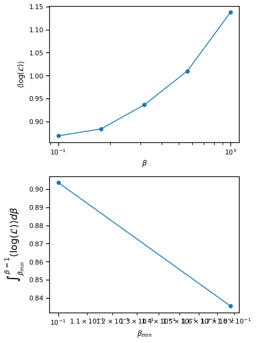
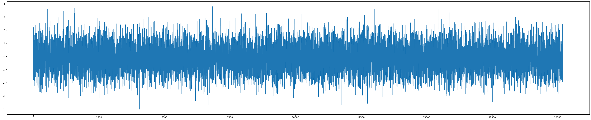
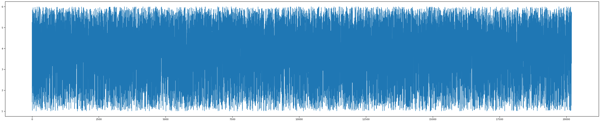
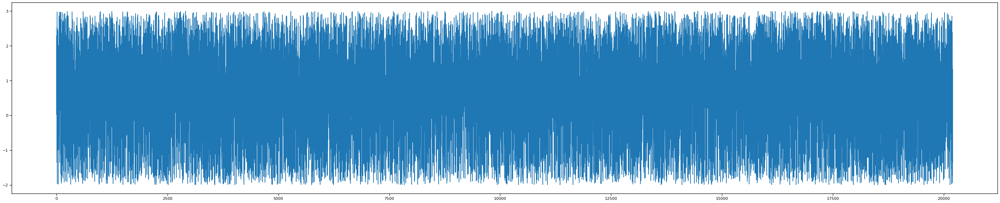
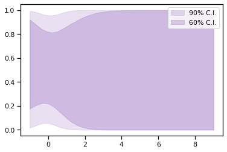

Linear BMM with full Bayesian calibration of coleman toy models¶
The models can be found in Coleman Thesis : https://go.exlibris.link/3fVZCfhl
This notebook shows how to use the Bayesian model mixing package Taweret for a toy problem.
Author : Dan Liyanage
Date : 19/21/2022
Steps for linear BMM¶
1. Get Models with a prediction method
2. Choose a Mixing method
3. Estimate the mixture weights (parameters in the mixture function) with user defined calibration method
To execute each step in this notebook we need to import the following from Taweret.
[1]:
import sys
import os
sys.path.insert(0, os.path.abspath('../../../../Taweret'))
[2]:
# Import models with a predict method
from Taweret.models import coleman_models as toy_models
# Mixing object with a likelihood method
from Taweret.mix.linear import linear_mix as LM
# Wrapper for the likelihood to be used with Bilby
from Taweret.calibrate.likelihood_wrappers import likelihood_wrapper_for_bilby
[3]:
# For plotting
import matplotlib.pyplot as plt
import seaborn as sns
# For calibration
import bilby
# For other operations
import numpy as np
import os
import shutil
[4]:
m1 = toy_models.coleman_model_1()
m2 = toy_models.coleman_model_2()
truth = toy_models.coleman_truth()
[5]:
g = np.linspace(-1,9,10)
plot_g = np.linspace(-1,9,100)
true_output = truth.predict(plot_g)
exp_data = truth.predict(g)
1. The models and the experimental data.¶
Truth
\(f(x) = 2-0.1(x-4)^2\), where \(x \in [-1, 9]\)
Model 1
\(f_1(x,\theta)= 0.5(x+\theta)-2\) , where \(\theta \in [1, 6]\)
Model 2
\(f_2(x,\theta)= -0.5(x-\theta) + 3.7\) , where \(\theta \in [-2, 3]\)
Experimental data
sampled from the Truth with a fixed standard deviation of 0.3
[6]:
sns.set_context('notebook')
fig, axs = plt.subplots(1,2,figsize=(20,5))
prior_ranges = [(1,6), (-2,3)]
for i in range(0,2):
ax = axs.flatten()[i]
ax.plot(plot_g, true_output[0], label='truth', color='black')
ax.errorbar(g,exp_data[0],exp_data[1], fmt='o', label='experimental data', color='r')
ax.legend()
ax.set_ylim(-2,4)
for value in np.linspace(*prior_ranges[i],10):
if i==0:
predict_1 = m1.predict(plot_g, value)
ax.plot(plot_g, predict_1[0])
ax.set_ylabel(r'$f_1(x)$')
if i==1:
predict_2 = m2.predict(plot_g, value)
ax.plot(plot_g, predict_2[0])
ax.set_ylabel(r'$f_2(x)$')
ax.set_xlabel('x')

2. Choose a Mixing method¶
[7]:
mix_model = LM(m1, m2, g, exp_data[0], exp_data[1], method='cdf', n_model_1=1, n_model_2=1, n_mix=2)
[8]:
mix_model.plot_weights(np.array([0.2, 10]),plot_g)

[9]:
#mix_model.mix_loglikelihood_test([0.25])
[10]:
mix_model.mix_loglikelihood(np.array([0.2, 10]), np.array([2]),np.array([1]))
[10]:
0.2897570171611727
[11]:
fig, ax = plt.subplots()
mix_prediction = mix_model.prediction(np.array([0.2, 10]), plot_g, np.array([2]), np.array([1]))
ax.plot(plot_g, m1.predict(plot_g, np.array([2]))[0].flatten(), label='model 1')
ax.plot(plot_g, m2.predict(plot_g, np.array([1]))[0].flatten(), label='model 2')
ax.plot(plot_g, mix_prediction.flatten(), label='BMM prediction')
ax.set_ylim(-2,4)
ax.legend()
[11]:
<matplotlib.legend.Legend at 0x7faf2ba6c748>

[12]:
# sw = np.linspace(0.01,1,1000)
# likelihood = np.array([mix_model.mix_loglikelihood([s]) for s in sw]).flatten()
# fig, ax = plt.subplots()
# ax.plot(sw,likelihood,label='Mixture likelihood for step function')
3. Estimating the mixture weights¶
[13]:
likelihood = likelihood_wrapper_for_bilby(mix_model)
Here theta_0, theta_1 are CDF mixture function parameters
theta_2 is the model_1 parameter
theta_3 is the model_2 parameter
[15]:
# A few simple setup steps
label = "cdf_mixing"
outdir = "outdir"
priors = dict(theta_0=bilby.core.prior.Normal(0, 1, "theta_0"),
theta_1=bilby.core.prior.Normal(0, 1, "theta_1"),
theta_2=bilby.core.prior.Uniform(1, 6, "theta_2"),
theta_3=bilby.core.prior.Uniform(-2, 3, "theta_3"))
# priors = dict(
# theta_0=bilby.core.prior.Beta(2,2)
# )
# And run sampler
## If file exists, delete it ##
if os.path.exists(outdir):
shutil.rmtree(outdir)
result = bilby.run_sampler(
likelihood,
priors,
sampler="ptemcee",
ntemps=5,
nwalkers=100,
Tmax=10,
nburn=200,
nsamples=500, # This is the number of raw samples
threads=5,
)
result.plot_corner()
23:13 bilby INFO : Running for label 'label', output will be saved to 'outdir'
23:13 bilby INFO : Search parameters:
23:13 bilby INFO : theta_0 = Normal(mu=0, sigma=1, name='theta_0', latex_label='theta_0', unit=None, boundary=None)
23:13 bilby INFO : theta_1 = Normal(mu=0, sigma=1, name='theta_1', latex_label='theta_1', unit=None, boundary=None)
23:13 bilby INFO : theta_2 = Uniform(minimum=1, maximum=6, name='theta_2', latex_label='theta_2', unit=None, boundary=None)
23:13 bilby INFO : theta_3 = Uniform(minimum=-2, maximum=3, name='theta_3', latex_label='theta_3', unit=None, boundary=None)
23:13 bilby INFO : Single likelihood evaluation took 6.207e-04 s
23:13 bilby WARNING : Supplied argument 'npool' not an argument of 'Ptemcee', removing.
23:13 bilby WARNING : Supplied argument 'nburn' not an argument of 'Ptemcee', removing.
23:13 bilby INFO : Using sampler Ptemcee with kwargs {'ntemps': 5, 'nwalkers': 100, 'Tmax': 10, 'betas': None, 'a': 2.0, 'adaptation_lag': 10000, 'adaptation_time': 100, 'random': None, 'adapt': False, 'swap_ratios': False}
23:13 bilby INFO : Using convergence inputs: ConvergenceInputs(autocorr_c=5, autocorr_tol=50, autocorr_tau=1, gradient_tau=0.1, gradient_mean_log_posterior=0.1, Q_tol=1.02, safety=1, burn_in_nact=50, burn_in_fixed_discard=0, mean_logl_frac=0.01, thin_by_nact=0.5, nsamples=500, ignore_keys_for_tau=None, min_tau=1, niterations_per_check=5)
23:13 bilby INFO : Creating MultiPool with 5 processes
23:13 bilby INFO : Generating pos0 samples
23:13 bilby INFO : Starting to sample
1|0:00:00|nc:2.5e+03|a0:0.00-1.00|swp:0.85-0.99|n:nan<500|t!nan(+nan,+nan)|q:inf|0.10ms/ev
2|0:00:00|nc:5.0e+03|a0:0.10-0.80|swp:0.88-0.98|n:nan<500|t!nan(+nan,+nan)|q:inf|0.10ms/ev
3|0:00:00|nc:7.5e+03|a0:0.13-0.73|swp:0.88-0.98|n:nan<500|t!nan(+nan,+nan)|q:inf|0.10ms/ev
4|0:00:00|nc:1.0e+04|a0:0.25-0.65|swp:0.88-0.97|n:nan<500|t!nan(+nan,+nan)|q:inf|0.09ms/ev
5|0:00:01|nc:1.2e+04|a0:0.28-0.68|swp:0.87-0.98|n:nan<500|t!nan(+nan,+nan)|q:inf|0.11ms/ev
6|0:00:01|nc:1.5e+04|a0:0.30-0.70|swp:0.87-0.98|n:nan<500|t!nan(+nan,+nan)|q:inf|0.11ms/ev
7|0:00:01|nc:1.8e+04|a0:0.29-0.69|swp:0.87-0.98|n:nan<500|t!nan(+nan,+nan)|q:inf|0.11ms/ev
8|0:00:02|nc:2.0e+04|a0:0.30-0.70|swp:0.87-0.98|n:nan<500|t!nan(+nan,+nan)|q:inf|0.10ms/ev
9|0:00:02|nc:2.2e+04|a0:0.31-0.67|swp:0.87-0.98|n:nan<500|t!nan(+nan,+nan)|q:inf|0.09ms/ev
10|0:00:02|nc:2.5e+04|a0:0.30-0.66|swp:0.86-0.98|n:nan<500|t!nan(+nan,+nan)|q:inf|0.10ms/ev
11|0:00:02|nc:2.8e+04|a0:0.27-0.65|swp:0.86-0.98|n:nan<500|t!nan(+nan,+nan)|q:inf|0.10ms/ev
12|0:00:02|nc:3.0e+04|a0:0.28-0.67|swp:0.86-0.98|n:nan<500|t!nan(+nan,+nan)|q:inf|0.09ms/ev
13|0:00:03|nc:3.2e+04|a0:0.29-0.66|swp:0.86-0.98|n:nan<500|t!nan(+nan,+nan)|q:inf|0.09ms/ev
14|0:00:03|nc:3.5e+04|a0:0.29-0.64|swp:0.87-0.98|n:nan<500|t!nan(+nan,+nan)|q:inf|0.10ms/ev
15|0:00:03|nc:3.8e+04|a0:0.28-0.64|swp:0.87-0.98|n:nan<500|t!nan(+nan,+nan)|q:inf|0.10ms/ev
16|0:00:03|nc:4.0e+04|a0:0.30-0.64|swp:0.87-0.98|n:nan<500|t!nan(+nan,+nan)|q:inf|0.09ms/ev
17|0:00:04|nc:4.2e+04|a0:0.33-0.64|swp:0.87-0.97|n:nan<500|t!nan(+nan,+nan)|q:inf|0.09ms/ev
18|0:00:04|nc:4.5e+04|a0:0.32-0.63|swp:0.87-0.97|n:nan<500|t!nan(+nan,+nan)|q:inf|0.09ms/ev
19|0:00:04|nc:4.8e+04|a0:0.33-0.63|swp:0.87-0.98|n:nan<500|t!nan(+nan,+nan)|q:inf|0.09ms/ev
20|0:00:04|nc:5.0e+04|a0:0.35-0.63|swp:0.87-0.97|n:nan<500|t!nan(+nan,+nan)|q:inf|0.09ms/ev
21|0:00:05|nc:5.2e+04|a0:0.37-0.63|swp:0.87-0.97|n:nan<500|t!nan(+nan,+nan)|q:inf|0.10ms/ev
22|0:00:05|nc:5.5e+04|a0:0.39-0.63|swp:0.87-0.98|n:nan<500|t!nan(+nan,+nan)|q:inf|0.10ms/ev
23|0:00:05|nc:5.8e+04|a0:0.38-0.62|swp:0.87-0.97|n:nan<500|t!nan(+nan,+nan)|q:inf|0.10ms/ev
24|0:00:05|nc:6.0e+04|a0:0.38-0.62|swp:0.87-0.97|n:nan<500|t!nan(+nan,+nan)|q:inf|0.11ms/ev
25|0:00:06|nc:6.2e+04|a0:0.38-0.62|swp:0.87-0.97|n:nan<500|t!nan(+nan,+nan)|q:inf|0.14ms/ev
26|0:00:06|nc:6.5e+04|a0:0.40-0.62|swp:0.87-0.97|n:nan<500|t!nan(+nan,+nan)|q:inf|0.14ms/ev
27|0:00:06|nc:6.8e+04|a0:0.40-0.60|swp:0.87-0.97|n:nan<500|t!nan(+nan,+nan)|q:inf|0.13ms/ev
28|0:00:07|nc:7.0e+04|a0:0.40-0.60|swp:0.87-0.97|n:nan<500|t!nan(+nan,+nan)|q:inf|0.11ms/ev
29|0:00:07|nc:7.2e+04|a0:0.41-0.61|swp:0.87-0.97|n:nan<500|t!nan(+nan,+nan)|q:inf|0.11ms/ev
30|0:00:07|nc:7.5e+04|a0:0.41-0.61|swp:0.87-0.97|n:nan<500|t!nan(+nan,+nan)|q:inf|0.13ms/ev
31|0:00:08|nc:7.8e+04|a0:0.41-0.61|swp:0.87-0.97|n:nan<500|t!nan(+nan,+nan)|q:inf|0.13ms/ev
32|0:00:08|nc:8.0e+04|a0:0.40-0.61|swp:0.87-0.97|n:nan<500|t!nan(+nan,+nan)|q:inf|0.14ms/ev
33|0:00:08|nc:8.2e+04|a0:0.41-0.62|swp:0.87-0.97|n:nan<500|t!nan(+nan,+nan)|q:inf|0.12ms/ev
34|0:00:09|nc:8.5e+04|a0:0.41-0.61|swp:0.87-0.97|n:nan<500|t!nan(+nan,+nan)|q:inf|0.11ms/ev
35|0:00:09|nc:8.8e+04|a0:0.41-0.60|swp:0.87-0.97|n:nan<500|t!nan(+nan,+nan)|q:inf|0.11ms/ev
36|0:00:09|nc:9.0e+04|a0:0.40-0.59|swp:0.87-0.97|n:nan<500|t!nan(+nan,+nan)|q:inf|0.11ms/ev
37|0:00:09|nc:9.2e+04|a0:0.40-0.58|swp:0.87-0.97|n:nan<500|t!nan(+nan,+nan)|q:inf|0.11ms/ev
38|0:00:10|nc:9.5e+04|a0:0.40-0.57|swp:0.87-0.97|n:nan<500|t!nan(+nan,+nan)|q:inf|0.11ms/ev
39|0:00:10|nc:9.8e+04|a0:0.41-0.57|swp:0.87-0.97|n:nan<500|t!nan(+nan,+nan)|q:inf|0.10ms/ev
40|0:00:10|nc:1.0e+05|a0:0.41-0.58|swp:0.87-0.97|n:nan<500|t!nan(+nan,+nan)|q:inf|0.12ms/ev
41|0:00:11|nc:1.0e+05|a0:0.40-0.58|swp:0.87-0.97|n:nan<500|t!nan(+nan,+nan)|q:inf|0.12ms/ev
42|0:00:11|nc:1.0e+05|a0:0.41-0.58|swp:0.87-0.97|n:nan<500|t!nan(+nan,+nan)|q:inf|0.11ms/ev
43|0:00:11|nc:1.1e+05|a0:0.41-0.58|swp:0.87-0.97|n:nan<500|t!nan(+nan,+nan)|q:inf|0.10ms/ev
44|0:00:11|nc:1.1e+05|a0:0.40-0.58|swp:0.87-0.97|n:nan<500|t!nan(+nan,+nan)|q:inf|0.10ms/ev
45|0:00:12|nc:1.1e+05|a0:0.41-0.58|swp:0.87-0.97|n:nan<500|t!nan(+nan,+nan)|q:inf|0.10ms/ev
46|0:00:12|nc:1.2e+05|a0:0.40-0.58|swp:0.87-0.97|n:nan<500|t!nan(+nan,+nan)|q:inf|0.10ms/ev
47|0:00:12|nc:1.2e+05|a0:0.40-0.57|swp:0.87-0.97|n:nan<500|t!nan(+nan,+nan)|q:inf|0.10ms/ev
48|0:00:12|nc:1.2e+05|a0:0.41-0.58|swp:0.87-0.97|n:nan<500|t!nan(+nan,+nan)|q:inf|0.10ms/ev
49|0:00:12|nc:1.2e+05|a0:0.42-0.58|swp:0.87-0.97|n:nan<500|t!nan(+nan,+nan)|q:inf|0.10ms/ev
50|0:00:13|nc:1.2e+05|a0:0.41-0.57|swp:0.87-0.97|n:nan<500|t!nan(+nan,+nan)|q:inf|0.10ms/ev
51|0:00:13|nc:1.3e+05|a0:0.41-0.57|swp:0.87-0.97|n:nan<500|t!nan(+nan,+nan)|q:inf|0.10ms/ev
52|0:00:13|nc:1.3e+05|a0:0.41-0.57|swp:0.87-0.97|n:nan<500|t!nan(+nan,+nan)|q:inf|0.10ms/ev
53|0:00:13|nc:1.3e+05|a0:0.42-0.57|swp:0.87-0.97|n:nan<500|t!nan(+nan,+nan)|q:inf|0.10ms/ev
54|0:00:14|nc:1.4e+05|a0:0.42-0.57|swp:0.87-0.97|n:nan<500|t!nan(+nan,+nan)|q:inf|0.10ms/ev
55|0:00:14|nc:1.4e+05|a0:0.42-0.57|swp:0.87-0.97|n:nan<500|t!nan(+nan,+nan)|q:inf|0.10ms/ev
56|0:00:14|nc:1.4e+05|a0:0.42-0.57|swp:0.87-0.97|n:nan<500|t!nan(+nan,+nan)|q:inf|0.10ms/ev
57|0:00:14|nc:1.4e+05|a0:0.42-0.56|swp:0.87-0.97|n:nan<500|t!nan(+nan,+nan)|q:inf|0.10ms/ev
58|0:00:15|nc:1.4e+05|a0:0.43-0.56|swp:0.87-0.97|n:nan<500|t!nan(+nan,+nan)|q:inf|0.10ms/ev
59|0:00:15|nc:1.5e+05|a0:0.43-0.56|swp:0.87-0.97|n:nan<500|t!nan(+nan,+nan)|q:inf|0.10ms/ev
60|0:00:15|nc:1.5e+05|a0:0.43-0.56|swp:0.87-0.97|n:nan<500|t!nan(+nan,+nan)|q:inf|0.10ms/ev
61|0:00:15|nc:1.5e+05|a0:0.43-0.56|swp:0.87-0.97|n:nan<500|t!nan(+nan,+nan)|q:inf|0.10ms/ev
62|0:00:16|nc:1.6e+05|a0:0.43-0.55|swp:0.87-0.97|n:nan<500|t!nan(+nan,+nan)|q:inf|0.10ms/ev
63|0:00:16|nc:1.6e+05|a0:0.43-0.56|swp:0.87-0.97|n:nan<500|t!nan(+nan,+nan)|q:inf|0.11ms/ev
64|0:00:16|nc:1.6e+05|a0:0.43-0.56|swp:0.87-0.97|n:nan<500|t!nan(+nan,+nan)|q:inf|0.12ms/ev
65|0:00:17|nc:1.6e+05|a0:0.44-0.56|swp:0.87-0.97|n:nan<500|t!nan(+nan,+nan)|q:inf|0.12ms/ev
66|0:00:17|nc:1.6e+05|a0:0.44-0.55|swp:0.87-0.97|n:nan<500|t!nan(+nan,+nan)|q:inf|0.11ms/ev
67|0:00:17|nc:1.7e+05|a0:0.44-0.55|swp:0.87-0.97|n:nan<500|t!nan(+nan,+nan)|q:inf|0.11ms/ev
68|0:00:18|nc:1.7e+05|a0:0.44-0.55|swp:0.87-0.97|n:nan<500|t!nan(+nan,+nan)|q:inf|0.12ms/ev
69|0:00:18|nc:1.7e+05|a0:0.45-0.55|swp:0.87-0.97|n:nan<500|t!nan(+nan,+nan)|q:inf|0.13ms/ev
70|0:00:18|nc:1.8e+05|a0:0.45-0.55|swp:0.87-0.97|n:nan<500|t!nan(+nan,+nan)|q:inf|0.13ms/ev
71|0:00:18|nc:1.8e+05|a0:0.45-0.55|swp:0.87-0.97|n:nan<500|t!nan(+nan,+nan)|q:inf|0.12ms/ev
72|0:00:19|nc:1.8e+05|a0:0.45-0.55|swp:0.87-0.97|n:nan<500|t!nan(+nan,+nan)|q:inf|0.12ms/ev
73|0:00:19|nc:1.8e+05|a0:0.45-0.56|swp:0.87-0.97|n:nan<500|t!nan(+nan,+nan)|q:inf|0.13ms/ev
74|0:00:19|nc:1.8e+05|a0:0.45-0.56|swp:0.87-0.97|n:nan<500|t!nan(+nan,+nan)|q:inf|0.12ms/ev
75|0:00:20|nc:1.9e+05|a0:0.45-0.57|swp:0.87-0.97|n:nan<500|t!nan(+nan,+nan)|q:inf|0.12ms/ev
76|0:00:20|nc:1.9e+05|a0:0.45-0.56|swp:0.87-0.97|n:nan<500|t!nan(+nan,+nan)|q:inf|0.11ms/ev
77|0:00:20|nc:1.9e+05|a0:0.45-0.56|swp:0.87-0.97|n:nan<500|t!nan(+nan,+nan)|q:inf|0.10ms/ev
78|0:00:20|nc:2.0e+05|a0:0.45-0.55|swp:0.87-0.97|n:nan<500|t!nan(+nan,+nan)|q:inf|0.10ms/ev
79|0:00:21|nc:2.0e+05|a0:0.45-0.55|swp:0.87-0.97|n:nan<500|t!nan(+nan,+nan)|q:inf|0.10ms/ev
80|0:00:21|nc:2.0e+05|a0:0.45-0.55|swp:0.87-0.97|n:nan<500|t!nan(+nan,+nan)|q:inf|0.10ms/ev
81|0:00:21|nc:2.0e+05|a0:0.45-0.55|swp:0.87-0.97|n:nan<500|t!nan(+nan,+nan)|q:inf|0.10ms/ev
82|0:00:21|nc:2.0e+05|a0:0.45-0.56|swp:0.87-0.97|n:nan<500|t!nan(+nan,+nan)|q:inf|0.10ms/ev
83|0:00:22|nc:2.1e+05|a0:0.45-0.55|swp:0.87-0.97|n:nan<500|t!nan(+nan,+nan)|q:inf|0.10ms/ev
84|0:00:22|nc:2.1e+05|a0:0.45-0.55|swp:0.87-0.97|n:nan<500|t!nan(+nan,+nan)|q:inf|0.10ms/ev
85|0:00:22|nc:2.1e+05|a0:0.45-0.55|swp:0.87-0.97|n:nan<500|t!nan(+nan,+nan)|q:inf|0.10ms/ev
86|0:00:22|nc:2.2e+05|a0:0.45-0.55|swp:0.87-0.97|n:nan<500|t!nan(+nan,+nan)|q:inf|0.10ms/ev
87|0:00:23|nc:2.2e+05|a0:0.45-0.55|swp:0.87-0.97|n:nan<500|t!nan(+nan,+nan)|q:inf|0.10ms/ev
88|0:00:23|nc:2.2e+05|a0:0.45-0.55|swp:0.87-0.97|n:nan<500|t!nan(+nan,+nan)|q:inf|0.10ms/ev
89|0:00:23|nc:2.2e+05|a0:0.45-0.55|swp:0.87-0.97|n:nan<500|t!nan(+nan,+nan)|q:inf|0.10ms/ev
90|0:00:23|nc:2.2e+05|a0:0.45-0.55|swp:0.87-0.97|n:nan<500|t!nan(+nan,+nan)|q:inf|0.09ms/ev
91|0:00:24|nc:2.3e+05|a0:0.45-0.55|swp:0.87-0.97|n:nan<500|t!nan(+nan,+nan)|q:inf|0.10ms/ev
92|0:00:24|nc:2.3e+05|a0:0.45-0.54|swp:0.87-0.97|n:nan<500|t!nan(+nan,+nan)|q:inf|0.10ms/ev
93|0:00:24|nc:2.3e+05|a0:0.45-0.54|swp:0.87-0.97|n:nan<500|t!nan(+nan,+nan)|q:inf|0.10ms/ev
94|0:00:24|nc:2.4e+05|a0:0.45-0.54|swp:0.87-0.97|n:nan<500|t!nan(+nan,+nan)|q:inf|0.10ms/ev
95|0:00:25|nc:2.4e+05|a0:0.45-0.54|swp:0.87-0.97|n:nan<500|t!nan(+nan,+nan)|q:inf|0.10ms/ev
96|0:00:25|nc:2.4e+05|a0:0.46-0.54|swp:0.87-0.97|n:nan<500|t!nan(+nan,+nan)|q:inf|0.10ms/ev
97|0:00:25|nc:2.4e+05|a0:0.46-0.54|swp:0.87-0.97|n:nan<500|t!nan(+nan,+nan)|q:inf|0.10ms/ev
98|0:00:25|nc:2.4e+05|a0:0.46-0.54|swp:0.87-0.97|n:nan<500|t!nan(+nan,+nan)|q:inf|0.10ms/ev
99|0:00:26|nc:2.5e+05|a0:0.46-0.54|swp:0.87-0.97|n:nan<500|t!nan(+nan,+nan)|q:inf|0.10ms/ev
100|0:00:26|nc:2.5e+05|a0:0.46-0.54|swp:0.87-0.97|n:nan<500|t!nan(+nan,+nan)|q:inf|0.10ms/ev
101|0:00:26|nc:2.5e+05|a0:0.46-0.54|swp:0.87-0.97|n:nan<500|t!nan(+nan,+nan)|q:inf|0.10ms/ev
102|0:00:26|nc:2.6e+05|a0:0.45-0.54|swp:0.87-0.97|n:nan<500|t!nan(+nan,+nan)|q:inf|0.10ms/ev
103|0:00:27|nc:2.6e+05|a0:0.46-0.54|swp:0.87-0.97|n:nan<500|t!nan(+nan,+nan)|q:inf|0.10ms/ev
104|0:00:27|nc:2.6e+05|a0:0.45-0.54|swp:0.87-0.97|n:nan<500|t!nan(+nan,+nan)|q:inf|0.10ms/ev
105|0:00:27|nc:2.6e+05|a0:0.46-0.54|swp:0.87-0.97|n:nan<500|t!nan(+nan,+nan)|q:inf|0.10ms/ev
106|0:00:27|nc:2.6e+05|a0:0.46-0.54|swp:0.87-0.97|n:nan<500|t!nan(+nan,+nan)|q:inf|0.10ms/ev
107|0:00:28|nc:2.7e+05|a0:0.46-0.54|swp:0.87-0.97|n:nan<500|t!nan(+nan,+nan)|q:inf|0.10ms/ev
108|0:00:28|nc:2.7e+05|a0:0.46-0.54|swp:0.87-0.97|n:nan<500|t!nan(+nan,+nan)|q:inf|0.11ms/ev
109|0:00:28|nc:2.7e+05|a0:0.46-0.54|swp:0.87-0.97|n:nan<500|t!nan(+nan,+nan)|q:inf|0.11ms/ev
110|0:00:28|nc:2.8e+05|a0:0.46-0.54|swp:0.87-0.97|n:nan<500|t!nan(+nan,+nan)|q:inf|0.11ms/ev
111|0:00:29|nc:2.8e+05|a0:0.46-0.54|swp:0.87-0.97|n:nan<500|t!nan(+nan,+nan)|q:inf|0.10ms/ev
112|0:00:29|nc:2.8e+05|a0:0.46-0.54|swp:0.87-0.97|n:nan<500|t!nan(+nan,+nan)|q:inf|0.11ms/ev
113|0:00:29|nc:2.8e+05|a0:0.45-0.53|swp:0.87-0.97|n:nan<500|t!nan(+nan,+nan)|q:inf|0.11ms/ev
114|0:00:30|nc:2.8e+05|a0:0.46-0.53|swp:0.87-0.97|n:nan<500|t!nan(+nan,+nan)|q:inf|0.11ms/ev
115|0:00:30|nc:2.9e+05|a0:0.46-0.53|swp:0.87-0.97|n:nan<500|t!nan(+nan,+nan)|q:inf|0.11ms/ev
116|0:00:30|nc:2.9e+05|a0:0.46-0.53|swp:0.87-0.97|n:nan<500|t!nan(+nan,+nan)|q:inf|0.11ms/ev
117|0:00:30|nc:2.9e+05|a0:0.46-0.54|swp:0.87-0.97|n:nan<500|t!nan(+nan,+nan)|q:inf|0.11ms/ev
118|0:00:31|nc:3.0e+05|a0:0.46-0.54|swp:0.87-0.97|n:nan<500|t!nan(+nan,+nan)|q:inf|0.11ms/ev
119|0:00:31|nc:3.0e+05|a0:0.46-0.54|swp:0.87-0.97|n:nan<500|t!nan(+nan,+nan)|q:inf|0.11ms/ev
120|0:00:31|nc:3.0e+05|a0:0.46-0.54|swp:0.87-0.97|n:nan<500|t!nan(+nan,+nan)|q:inf|0.11ms/ev
121|0:00:31|nc:3.0e+05|a0:0.46-0.54|swp:0.87-0.97|n:nan<500|t!nan(+nan,+nan)|q:inf|0.11ms/ev
122|0:00:32|nc:3.0e+05|a0:0.46-0.54|swp:0.87-0.97|n:nan<500|t!nan(+nan,+nan)|q:inf|0.11ms/ev
123|0:00:32|nc:3.1e+05|a0:0.46-0.54|swp:0.87-0.97|n:nan<500|t!nan(+nan,+nan)|q:inf|0.11ms/ev
124|0:00:32|nc:3.1e+05|a0:0.46-0.54|swp:0.87-0.97|n:nan<500|t!nan(+nan,+nan)|q:inf|0.11ms/ev
125|0:00:33|nc:3.1e+05|a0:0.46-0.53|swp:0.87-0.97|n:nan<500|t!nan(+nan,+nan)|q:inf|0.11ms/ev
126|0:00:33|nc:3.2e+05|a0:0.46-0.53|swp:0.87-0.97|n:nan<500|t!nan(+nan,+nan)|q:inf|0.10ms/ev
127|0:00:33|nc:3.2e+05|a0:0.47-0.53|swp:0.87-0.97|n:nan<500|t!nan(+nan,+nan)|q:inf|0.10ms/ev
128|0:00:33|nc:3.2e+05|a0:0.47-0.53|swp:0.87-0.97|n:nan<500|t!nan(+nan,+nan)|q:inf|0.10ms/ev
129|0:00:34|nc:3.2e+05|a0:0.47-0.53|swp:0.87-0.97|n:nan<500|t!nan(+nan,+nan)|q:inf|0.11ms/ev
130|0:00:34|nc:3.2e+05|a0:0.47-0.53|swp:0.87-0.97|n:nan<500|t!nan(+nan,+nan)|q:inf|0.10ms/ev
131|0:00:34|nc:3.3e+05|a0:0.47-0.53|swp:0.87-0.97|n:nan<500|t!nan(+nan,+nan)|q:inf|0.10ms/ev
132|0:00:34|nc:3.3e+05|a0:0.47-0.53|swp:0.87-0.97|n:nan<500|t!nan(+nan,+nan)|q:inf|0.10ms/ev
133|0:00:35|nc:3.3e+05|a0:0.46-0.53|swp:0.87-0.97|n:nan<500|t!nan(+nan,+nan)|q:inf|0.10ms/ev
134|0:00:35|nc:3.4e+05|a0:0.47-0.53|swp:0.87-0.97|n:nan<500|t!nan(+nan,+nan)|q:inf|0.11ms/ev
135|0:00:35|nc:3.4e+05|a0:0.47-0.53|swp:0.87-0.97|n:nan<500|t!nan(+nan,+nan)|q:inf|0.13ms/ev
136|0:00:36|nc:3.4e+05|a0:0.47-0.53|swp:0.87-0.97|n:nan<500|t!nan(+nan,+nan)|q:inf|0.13ms/ev
137|0:00:36|nc:3.4e+05|a0:0.46-0.53|swp:0.87-0.97|n:nan<500|t!nan(+nan,+nan)|q:inf|0.13ms/ev
138|0:00:36|nc:3.4e+05|a0:0.46-0.54|swp:0.87-0.97|n:nan<500|t!nan(+nan,+nan)|q:inf|0.12ms/ev
139|0:00:36|nc:3.5e+05|a0:0.46-0.53|swp:0.87-0.97|n:nan<500|t!nan(+nan,+nan)|q:inf|0.12ms/ev
140|0:00:37|nc:3.5e+05|a0:0.46-0.54|swp:0.87-0.97|n:nan<500|t!nan(+nan,+nan)|q:inf|0.11ms/ev
141|0:00:37|nc:3.5e+05|a0:0.46-0.53|swp:0.87-0.97|n:nan<500|t!nan(+nan,+nan)|q:inf|0.13ms/ev
142|0:00:38|nc:3.6e+05|a0:0.46-0.53|swp:0.87-0.97|n:nan<500|t!nan(+nan,+nan)|q:inf|0.16ms/ev
143|0:00:38|nc:3.6e+05|a0:0.46-0.53|swp:0.87-0.97|n:nan<500|t!nan(+nan,+nan)|q:inf|0.20ms/ev
144|0:00:39|nc:3.6e+05|a0:0.46-0.53|swp:0.87-0.97|n:nan<500|t!nan(+nan,+nan)|q:inf|0.28ms/ev
145|0:00:40|nc:3.6e+05|a0:0.46-0.53|swp:0.87-0.97|n:nan<500|t!nan(+nan,+nan)|q:inf|0.31ms/ev
146|0:00:41|nc:3.6e+05|a0:0.46-0.53|swp:0.87-0.97|n:nan<500|t!nan(+nan,+nan)|q:inf|0.33ms/ev
147|0:00:41|nc:3.7e+05|a0:0.46-0.53|swp:0.87-0.97|n:nan<500|t!nan(+nan,+nan)|q:inf|0.27ms/ev
148|0:00:42|nc:3.7e+05|a0:0.46-0.53|swp:0.87-0.97|n:nan<500|t!nan(+nan,+nan)|q:inf|0.24ms/ev
149|0:00:42|nc:3.7e+05|a0:0.46-0.53|swp:0.87-0.97|n:nan<500|t!nan(+nan,+nan)|q:inf|0.20ms/ev
150|0:00:43|nc:3.8e+05|a0:0.46-0.53|swp:0.87-0.97|n:nan<500|t!nan(+nan,+nan)|q:inf|0.20ms/ev
151|0:00:43|nc:3.8e+05|a0:0.46-0.53|swp:0.87-0.97|n:nan<500|t!nan(+nan,+nan)|q:inf|0.19ms/ev
152|0:00:44|nc:3.8e+05|a0:0.46-0.53|swp:0.87-0.97|n:nan<500|t!nan(+nan,+nan)|q:inf|0.20ms/ev
153|0:00:44|nc:3.8e+05|a0:0.46-0.53|swp:0.87-0.97|n:nan<500|t!nan(+nan,+nan)|q:inf|0.18ms/ev
154|0:00:45|nc:3.8e+05|a0:0.46-0.53|swp:0.87-0.97|n:nan<500|t!nan(+nan,+nan)|q:inf|0.16ms/ev
155|0:00:45|nc:3.9e+05|a0:0.46-0.53|swp:0.87-0.97|n:nan<500|t!nan(+nan,+nan)|q:inf|0.14ms/ev
156|0:00:45|nc:3.9e+05|a0:0.46-0.53|swp:0.87-0.97|n:nan<500|t!nan(+nan,+nan)|q:inf|0.13ms/ev
157|0:00:45|nc:3.9e+05|a0:0.46-0.53|swp:0.87-0.97|n:nan<500|t!nan(+nan,+nan)|q:inf|0.12ms/ev
158|0:00:46|nc:4.0e+05|a0:0.46-0.53|swp:0.87-0.97|n:nan<500|t!nan(+nan,+nan)|q:inf|0.13ms/ev
159|0:00:46|nc:4.0e+05|a0:0.46-0.53|swp:0.87-0.97|n:nan<500|t!nan(+nan,+nan)|q:inf|0.14ms/ev
160|0:00:47|nc:4.0e+05|a0:0.46-0.53|swp:0.87-0.97|n:nan<500|t!nan(+nan,+nan)|q:inf|0.15ms/ev
161|0:00:47|nc:4.0e+05|a0:0.46-0.53|swp:0.87-0.97|n:nan<500|t!nan(+nan,+nan)|q:inf|0.14ms/ev
162|0:00:47|nc:4.0e+05|a0:0.46-0.53|swp:0.87-0.97|n:nan<500|t!nan(+nan,+nan)|q:inf|0.13ms/ev
163|0:00:47|nc:4.1e+05|a0:0.46-0.53|swp:0.87-0.97|n:nan<500|t!nan(+nan,+nan)|q:inf|0.12ms/ev
164|0:00:48|nc:4.1e+05|a0:0.46-0.53|swp:0.87-0.97|n:nan<500|t!nan(+nan,+nan)|q:inf|0.12ms/ev
165|0:00:48|nc:4.1e+05|a0:0.46-0.53|swp:0.87-0.97|n:nan<500|t!nan(+nan,+nan)|q:inf|0.12ms/ev
166|0:00:48|nc:4.2e+05|a0:0.46-0.53|swp:0.87-0.97|n:nan<500|t!nan(+nan,+nan)|q:inf|0.12ms/ev
167|0:00:49|nc:4.2e+05|a0:0.46-0.53|swp:0.87-0.97|n:nan<500|t!nan(+nan,+nan)|q:inf|0.13ms/ev
168|0:00:49|nc:4.2e+05|a0:0.46-0.53|swp:0.87-0.97|n:nan<500|t!nan(+nan,+nan)|q:inf|0.13ms/ev
169|0:00:49|nc:4.2e+05|a0:0.46-0.53|swp:0.87-0.97|n:nan<500|t!nan(+nan,+nan)|q:inf|0.12ms/ev
170|0:00:50|nc:4.2e+05|a0:0.46-0.53|swp:0.87-0.97|n:nan<500|t!nan(+nan,+nan)|q:inf|0.12ms/ev
171|0:00:50|nc:4.3e+05|a0:0.46-0.53|swp:0.87-0.97|n:nan<500|t!nan(+nan,+nan)|q:inf|0.12ms/ev
172|0:00:50|nc:4.3e+05|a0:0.46-0.53|swp:0.87-0.97|n:nan<500|t!nan(+nan,+nan)|q:inf|0.12ms/ev
173|0:00:50|nc:4.3e+05|a0:0.46-0.53|swp:0.87-0.97|n:nan<500|t!nan(+nan,+nan)|q:inf|0.12ms/ev
174|0:00:51|nc:4.4e+05|a0:0.46-0.53|swp:0.87-0.97|n:nan<500|t!nan(+nan,+nan)|q:inf|0.12ms/ev
175|0:00:51|nc:4.4e+05|a0:0.46-0.53|swp:0.87-0.97|n:nan<500|t!nan(+nan,+nan)|q:inf|0.12ms/ev
176|0:00:51|nc:4.4e+05|a0:0.46-0.53|swp:0.87-0.97|n:nan<500|t!nan(+nan,+nan)|q:inf|0.12ms/ev
177|0:00:52|nc:4.4e+05|a0:0.46-0.53|swp:0.87-0.97|n:nan<500|t!nan(+nan,+nan)|q:inf|0.12ms/ev
178|0:00:52|nc:4.4e+05|a0:0.46-0.53|swp:0.87-0.97|n:nan<500|t!nan(+nan,+nan)|q:inf|0.12ms/ev
179|0:00:52|nc:4.5e+05|a0:0.46-0.53|swp:0.87-0.97|n:nan<500|t!nan(+nan,+nan)|q:inf|0.12ms/ev
180|0:00:53|nc:4.5e+05|a0:0.46-0.53|swp:0.87-0.97|n:nan<500|t!nan(+nan,+nan)|q:inf|0.12ms/ev
181|0:00:53|nc:4.5e+05|a0:0.46-0.53|swp:0.87-0.97|n:nan<500|t!nan(+nan,+nan)|q:inf|0.12ms/ev
182|0:00:53|nc:4.6e+05|a0:0.46-0.53|swp:0.87-0.97|n:nan<500|t!nan(+nan,+nan)|q:inf|0.12ms/ev
183|0:00:54|nc:4.6e+05|a0:0.46-0.53|swp:0.87-0.97|n:nan<500|t!nan(+nan,+nan)|q:inf|0.13ms/ev
184|0:00:54|nc:4.6e+05|a0:0.46-0.53|swp:0.87-0.97|n:nan<500|t!nan(+nan,+nan)|q:inf|0.12ms/ev
185|0:00:54|nc:4.6e+05|a0:0.46-0.53|swp:0.87-0.97|n:nan<500|t!nan(+nan,+nan)|q:inf|0.12ms/ev
186|0:00:54|nc:4.6e+05|a0:0.47-0.53|swp:0.87-0.97|n:nan<500|t!nan(+nan,+nan)|q:inf|0.12ms/ev
187|0:00:55|nc:4.7e+05|a0:0.47-0.53|swp:0.87-0.97|n:nan<500|t!nan(+nan,+nan)|q:inf|0.12ms/ev
188|0:00:55|nc:4.7e+05|a0:0.47-0.53|swp:0.87-0.97|n:nan<500|t!nan(+nan,+nan)|q:inf|0.14ms/ev
189|0:00:55|nc:4.7e+05|a0:0.47-0.53|swp:0.87-0.97|n:nan<500|t!nan(+nan,+nan)|q:inf|0.13ms/ev
190|0:00:56|nc:4.8e+05|a0:0.47-0.53|swp:0.87-0.97|n:nan<500|t!nan(+nan,+nan)|q:inf|0.13ms/ev
191|0:00:56|nc:4.8e+05|a0:0.47-0.53|swp:0.87-0.97|n:nan<500|t!nan(+nan,+nan)|q:inf|0.12ms/ev
192|0:00:56|nc:4.8e+05|a0:0.47-0.53|swp:0.87-0.97|n:nan<500|t!nan(+nan,+nan)|q:inf|0.12ms/ev
193|0:00:57|nc:4.8e+05|a0:0.47-0.53|swp:0.87-0.97|n:nan<500|t!nan(+nan,+nan)|q:inf|0.12ms/ev
194|0:00:57|nc:4.8e+05|a0:0.47-0.53|swp:0.87-0.97|n:nan<500|t!nan(+nan,+nan)|q:inf|0.13ms/ev
195|0:00:57|nc:4.9e+05|a0:0.47-0.53|swp:0.87-0.97|n:nan<500|t!nan(+nan,+nan)|q:inf|0.12ms/ev
196|0:00:58|nc:4.9e+05|a0:0.47-0.53|swp:0.87-0.97|n:nan<500|t!nan(+nan,+nan)|q:inf|0.14ms/ev
197|0:00:58|nc:4.9e+05|a0:0.47-0.53|swp:0.87-0.97|n:nan<500|t!nan(+nan,+nan)|q:inf|0.13ms/ev
198|0:00:58|nc:5.0e+05|a0:0.47-0.53|swp:0.87-0.97|n:nan<500|t!nan(+nan,+nan)|q:inf|0.13ms/ev
199|0:00:58|nc:5.0e+05|a0:0.47-0.53|swp:0.87-0.97|n:nan<500|t!nan(+nan,+nan)|q:inf|0.11ms/ev
200|0:00:59|nc:5.0e+05|a0:0.47-0.53|swp:0.87-0.97|n:nan<500|t!nan(+nan,+nan)|q:inf|0.11ms/ev
201|0:00:59|nc:5.0e+05|a0:0.47-0.53|swp:0.87-0.97|n:nan<500|t!nan(+nan,+nan)|q:inf|0.12ms/ev
202|0:00:59|nc:5.0e+05|a0:0.47-0.53|swp:0.87-0.97|n:nan<500|t!nan(+nan,+nan)|q:inf|0.12ms/ev
203|0:01:00|nc:5.1e+05|a0:0.47-0.53|swp:0.87-0.97|n:nan<500|t!nan(+nan,+nan)|q:inf|0.11ms/ev
204|0:01:00|nc:5.1e+05|a0:0.47-0.53|swp:0.87-0.97|n:nan<500|t!nan(+nan,+nan)|q:inf|0.11ms/ev
205|0:01:00|nc:5.1e+05|a0:0.47-0.53|swp:0.87-0.97|n:nan<500|t!nan(+nan,+nan)|q:inf|0.12ms/ev
206|0:01:01|nc:5.2e+05|a0:0.47-0.52|swp:0.87-0.97|n:nan<500|t!nan(+nan,+nan)|q:inf|0.12ms/ev
207|0:01:01|nc:5.2e+05|a0:0.47-0.52|swp:0.87-0.97|n:nan<500|t!nan(+nan,+nan)|q:inf|0.12ms/ev
208|0:01:01|nc:5.2e+05|a0:0.47-0.52|swp:0.87-0.97|n:nan<500|t!nan(+nan,+nan)|q:inf|0.12ms/ev
209|0:01:01|nc:5.2e+05|a0:0.47-0.52|swp:0.87-0.97|n:nan<500|t!nan(+nan,+nan)|q:inf|0.12ms/ev
210|0:01:02|nc:5.2e+05|a0:0.47-0.52|swp:0.87-0.97|n:nan<500|t!nan(+nan,+nan)|q:inf|0.12ms/ev
211|0:01:02|nc:5.3e+05|a0:0.47-0.52|swp:0.87-0.97|n:nan<500|t!nan(+nan,+nan)|q:inf|0.12ms/ev
212|0:01:02|nc:5.3e+05|a0:0.47-0.52|swp:0.87-0.97|n:nan<500|t!nan(+nan,+nan)|q:inf|0.12ms/ev
213|0:01:03|nc:5.3e+05|a0:0.47-0.53|swp:0.87-0.97|n:nan<500|t!nan(+nan,+nan)|q:inf|0.12ms/ev
214|0:01:03|nc:5.4e+05|a0:0.47-0.53|swp:0.87-0.97|n:nan<500|t!nan(+nan,+nan)|q:inf|0.11ms/ev
215|0:01:03|nc:5.4e+05|a0:0.47-0.52|swp:0.87-0.97|n:nan<500|t!nan(+nan,+nan)|q:inf|0.12ms/ev
216|0:01:04|nc:5.4e+05|a0:0.47-0.52|swp:0.87-0.97|n:nan<500|t!nan(+nan,+nan)|q:inf|0.12ms/ev
217|0:01:04|nc:5.4e+05|a0:0.47-0.52|swp:0.87-0.97|n:nan<500|t!nan(+nan,+nan)|q:inf|0.12ms/ev
218|0:01:04|nc:5.4e+05|a0:0.47-0.52|swp:0.87-0.97|n:nan<500|t!nan(+nan,+nan)|q:inf|0.11ms/ev
219|0:01:04|nc:5.5e+05|a0:0.47-0.52|swp:0.87-0.97|n:nan<500|t!nan(+nan,+nan)|q:inf|0.11ms/ev
220|0:01:05|nc:5.5e+05|a0:0.47-0.52|swp:0.87-0.97|n:nan<500|t!nan(+nan,+nan)|q:inf|0.11ms/ev
221|0:01:05|nc:5.5e+05|a0:0.47-0.52|swp:0.87-0.97|n:nan<500|t!nan(+nan,+nan)|q:inf|0.11ms/ev
222|0:01:05|nc:5.6e+05|a0:0.47-0.53|swp:0.87-0.97|n:nan<500|t!nan(+nan,+nan)|q:inf|0.10ms/ev
223|0:01:05|nc:5.6e+05|a0:0.47-0.53|swp:0.87-0.97|n:nan<500|t!nan(+nan,+nan)|q:inf|0.11ms/ev
224|0:01:06|nc:5.6e+05|a0:0.47-0.53|swp:0.87-0.97|n:nan<500|t!nan(+nan,+nan)|q:inf|0.13ms/ev
225|0:01:06|nc:5.6e+05|a0:0.47-0.53|swp:0.87-0.97|n:nan<500|t!nan(+nan,+nan)|q:inf|0.13ms/ev
226|0:01:06|nc:5.6e+05|a0:0.47-0.53|swp:0.87-0.97|n:nan<500|t!nan(+nan,+nan)|q:inf|0.12ms/ev
227|0:01:07|nc:5.7e+05|a0:0.47-0.53|swp:0.87-0.97|n:nan<500|t!nan(+nan,+nan)|q:inf|0.12ms/ev
228|0:01:07|nc:5.7e+05|a0:0.47-0.52|swp:0.87-0.97|n:nan<500|t!nan(+nan,+nan)|q:inf|0.12ms/ev
229|0:01:07|nc:5.7e+05|a0:0.48-0.52|swp:0.87-0.97|n:nan<500|t!nan(+nan,+nan)|q:inf|0.12ms/ev
230|0:01:08|nc:5.8e+05|a0:0.47-0.52|swp:0.87-0.97|n:nan<500|t!nan(+nan,+nan)|q:inf|0.11ms/ev
231|0:01:08|nc:5.8e+05|a0:0.47-0.52|swp:0.87-0.97|n:nan<500|t!nan(+nan,+nan)|q:inf|0.11ms/ev
232|0:01:08|nc:5.8e+05|a0:0.47-0.52|swp:0.87-0.97|n:nan<500|t!nan(+nan,+nan)|q:inf|0.12ms/ev
233|0:01:08|nc:5.8e+05|a0:0.48-0.52|swp:0.87-0.97|n:nan<500|t!nan(+nan,+nan)|q:inf|0.12ms/ev
234|0:01:09|nc:5.8e+05|a0:0.47-0.52|swp:0.87-0.97|n:nan<500|t!nan(+nan,+nan)|q:inf|0.13ms/ev
235|0:01:09|nc:5.9e+05|a0:0.47-0.52|swp:0.87-0.97|n:nan<500|t!nan(+nan,+nan)|q:inf|0.13ms/ev
236|0:01:10|nc:5.9e+05|a0:0.47-0.52|swp:0.87-0.97|n:nan<500|t!nan(+nan,+nan)|q:inf|0.13ms/ev
237|0:01:10|nc:5.9e+05|a0:0.48-0.52|swp:0.87-0.97|n:nan<500|t!nan(+nan,+nan)|q:inf|0.13ms/ev
238|0:01:10|nc:6.0e+05|a0:0.48-0.52|swp:0.87-0.97|n:nan<500|t!nan(+nan,+nan)|q:inf|0.12ms/ev
239|0:01:10|nc:6.0e+05|a0:0.48-0.52|swp:0.87-0.97|n:nan<500|t!nan(+nan,+nan)|q:inf|0.13ms/ev
240|0:01:11|nc:6.0e+05|a0:0.48-0.52|swp:0.87-0.97|n:nan<500|t!nan(+nan,+nan)|q:inf|0.12ms/ev
241|0:01:11|nc:6.0e+05|a0:0.48-0.52|swp:0.87-0.97|n:nan<500|t!nan(+nan,+nan)|q:inf|0.12ms/ev
242|0:01:11|nc:6.0e+05|a0:0.48-0.52|swp:0.87-0.97|n:nan<500|t!nan(+nan,+nan)|q:inf|0.11ms/ev
243|0:01:12|nc:6.1e+05|a0:0.47-0.52|swp:0.87-0.97|n:nan<500|t!nan(+nan,+nan)|q:inf|0.11ms/ev
244|0:01:12|nc:6.1e+05|a0:0.47-0.52|swp:0.87-0.97|n:nan<500|t!nan(+nan,+nan)|q:inf|0.11ms/ev
245|0:01:12|nc:6.1e+05|a0:0.48-0.52|swp:0.87-0.97|n:nan<500|t!nan(+nan,+nan)|q:inf|0.12ms/ev
246|0:01:13|nc:6.2e+05|a0:0.48-0.52|swp:0.87-0.97|n:nan<500|t!nan(+nan,+nan)|q:inf|0.13ms/ev
247|0:01:13|nc:6.2e+05|a0:0.48-0.52|swp:0.87-0.97|n:nan<500|t!nan(+nan,+nan)|q:inf|0.17ms/ev
248|0:01:13|nc:6.2e+05|a0:0.47-0.52|swp:0.87-0.97|n:nan<500|t!nan(+nan,+nan)|q:inf|0.15ms/ev
249|0:01:14|nc:6.2e+05|a0:0.48-0.52|swp:0.87-0.97|n:nan<500|t!nan(+nan,+nan)|q:inf|0.14ms/ev
250|0:01:14|nc:6.2e+05|a0:0.48-0.52|swp:0.87-0.97|n:nan<500|t!nan(+nan,+nan)|q:inf|0.11ms/ev
251|0:01:14|nc:6.3e+05|a0:0.47-0.52|swp:0.87-0.97|n:nan<500|t!nan(+nan,+nan)|q:inf|0.11ms/ev
252|0:01:14|nc:6.3e+05|a0:0.48-0.52|swp:0.87-0.97|n:nan<500|t!nan(+nan,+nan)|q:inf|0.12ms/ev
253|0:01:15|nc:6.3e+05|a0:0.48-0.52|swp:0.87-0.97|n:nan<500|t!nan(+nan,+nan)|q:inf|0.13ms/ev
254|0:01:15|nc:6.4e+05|a0:0.48-0.52|swp:0.87-0.97|n:nan<500|t!nan(+nan,+nan)|q:inf|0.14ms/ev
255|0:01:15|nc:6.4e+05|a0:0.48-0.52|swp:0.87-0.97|n:nan<500|t!nan(+nan,+nan)|q:inf|0.13ms/ev
256|0:01:16|nc:6.4e+05|a0:0.48-0.52|swp:0.87-0.97|n:nan<500|t!nan(+nan,+nan)|q:inf|0.11ms/ev
257|0:01:16|nc:6.4e+05|a0:0.48-0.52|swp:0.87-0.97|n:nan<500|t!nan(+nan,+nan)|q:inf|0.11ms/ev
258|0:01:16|nc:6.4e+05|a0:0.48-0.52|swp:0.87-0.97|n:nan<500|t!nan(+nan,+nan)|q:inf|0.12ms/ev
259|0:01:17|nc:6.5e+05|a0:0.48-0.52|swp:0.87-0.97|n:nan<500|t!nan(+nan,+nan)|q:inf|0.13ms/ev
260|0:01:17|nc:6.5e+05|a0:0.48-0.52|swp:0.87-0.97|n:nan<500|t!nan(+nan,+nan)|q:inf|0.13ms/ev
261|0:01:17|nc:6.5e+05|a0:0.48-0.52|swp:0.87-0.97|n:nan<500|t!nan(+nan,+nan)|q:inf|0.13ms/ev
262|0:01:18|nc:6.6e+05|a0:0.48-0.52|swp:0.87-0.97|n:nan<500|t!nan(+nan,+nan)|q:inf|0.13ms/ev
263|0:01:18|nc:6.6e+05|a0:0.48-0.52|swp:0.87-0.97|n:nan<500|t!nan(+nan,+nan)|q:inf|0.12ms/ev
264|0:01:18|nc:6.6e+05|a0:0.48-0.52|swp:0.87-0.97|n:nan<500|t!nan(+nan,+nan)|q:inf|0.11ms/ev
265|0:01:19|nc:6.6e+05|a0:0.48-0.52|swp:0.87-0.97|n:nan<500|t!nan(+nan,+nan)|q:inf|0.12ms/ev
266|0:01:19|nc:6.6e+05|a0:0.48-0.52|swp:0.87-0.97|n:nan<500|t!nan(+nan,+nan)|q:inf|0.12ms/ev
267|0:01:19|nc:6.7e+05|a0:0.48-0.52|swp:0.87-0.97|n:nan<500|t!nan(+nan,+nan)|q:inf|0.12ms/ev
268|0:01:19|nc:6.7e+05|a0:0.48-0.52|swp:0.87-0.97|n:nan<500|t!nan(+nan,+nan)|q:inf|0.11ms/ev
269|0:01:20|nc:6.7e+05|a0:0.48-0.52|swp:0.87-0.97|n:nan<500|t!nan(+nan,+nan)|q:inf|0.12ms/ev
270|0:01:20|nc:6.8e+05|a0:0.48-0.52|swp:0.87-0.97|n:nan<500|t!nan(+nan,+nan)|q:inf|0.13ms/ev
271|0:01:20|nc:6.8e+05|a0:0.48-0.52|swp:0.87-0.97|n:nan<500|t!nan(+nan,+nan)|q:inf|0.13ms/ev
272|0:01:21|nc:6.8e+05|a0:0.48-0.52|swp:0.87-0.97|n:nan<500|t!nan(+nan,+nan)|q:inf|0.12ms/ev
273|0:01:21|nc:6.8e+05|a0:0.48-0.52|swp:0.87-0.97|n:nan<500|t!nan(+nan,+nan)|q:inf|0.12ms/ev
274|0:01:21|nc:6.8e+05|a0:0.48-0.52|swp:0.87-0.97|n:nan<500|t!nan(+nan,+nan)|q:inf|0.12ms/ev
275|0:01:21|nc:6.9e+05|a0:0.48-0.52|swp:0.87-0.97|n:nan<500|t!nan(+nan,+nan)|q:inf|0.11ms/ev
276|0:01:22|nc:6.9e+05|a0:0.48-0.52|swp:0.87-0.97|n:nan<500|t!nan(+nan,+nan)|q:inf|0.11ms/ev
277|0:01:22|nc:6.9e+05|a0:0.48-0.52|swp:0.87-0.97|n:nan<500|t!nan(+nan,+nan)|q:inf|0.11ms/ev
278|0:01:22|nc:7.0e+05|a0:0.48-0.52|swp:0.87-0.97|n:nan<500|t!nan(+nan,+nan)|q:inf|0.11ms/ev
279|0:01:22|nc:7.0e+05|a0:0.48-0.52|swp:0.87-0.97|n:nan<500|t!nan(+nan,+nan)|q:inf|0.10ms/ev
280|0:01:23|nc:7.0e+05|a0:0.48-0.52|swp:0.87-0.97|n:nan<500|t!nan(+nan,+nan)|q:inf|0.10ms/ev
281|0:01:23|nc:7.0e+05|a0:0.48-0.52|swp:0.87-0.97|n:nan<500|t!nan(+nan,+nan)|q:inf|0.10ms/ev
282|0:01:23|nc:7.0e+05|a0:0.48-0.52|swp:0.87-0.97|n:nan<500|t!nan(+nan,+nan)|q:inf|0.11ms/ev
283|0:01:24|nc:7.1e+05|a0:0.48-0.52|swp:0.87-0.97|n:nan<500|t!nan(+nan,+nan)|q:inf|0.11ms/ev
284|0:01:24|nc:7.1e+05|a0:0.48-0.52|swp:0.87-0.97|n:nan<500|t!nan(+nan,+nan)|q:inf|0.11ms/ev
285|0:01:24|nc:7.1e+05|a0:0.48-0.52|swp:0.87-0.97|n:nan<500|t!nan(+nan,+nan)|q:inf|0.11ms/ev
286|0:01:24|nc:7.2e+05|a0:0.48-0.52|swp:0.87-0.97|n:nan<500|t!nan(+nan,+nan)|q:inf|0.11ms/ev
287|0:01:25|nc:7.2e+05|a0:0.48-0.52|swp:0.87-0.97|n:nan<500|t!nan(+nan,+nan)|q:inf|0.11ms/ev
288|0:01:25|nc:7.2e+05|a0:0.48-0.52|swp:0.87-0.97|n:nan<500|t!nan(+nan,+nan)|q:inf|0.11ms/ev
289|0:01:25|nc:7.2e+05|a0:0.48-0.52|swp:0.87-0.97|n:nan<500|t!nan(+nan,+nan)|q:inf|0.12ms/ev
290|0:01:26|nc:7.2e+05|a0:0.47-0.52|swp:0.87-0.97|n:nan<500|t!nan(+nan,+nan)|q:inf|0.12ms/ev
291|0:01:26|nc:7.3e+05|a0:0.47-0.52|swp:0.87-0.97|n:100<500|t!2(+nan,+0.00)|q:1.00|0.12ms/ev
292|0:01:26|nc:7.3e+05|a0:0.47-0.52|swp:0.87-0.97|n:200<500|t!2(+nan,+0.00)|q:1.00|0.14ms/ev
293|0:01:27|nc:7.3e+05|a0:0.47-0.52|swp:0.87-0.97|n:300<500|t!2(+nan,+0.00)|q:1.00|0.15ms/ev
294|0:01:27|nc:7.4e+05|a0:0.47-0.52|swp:0.87-0.97|n:400<500|t!2(+nan,+0.00)|q:1.00|0.15ms/ev
295|0:01:27|nc:7.4e+05|a0:0.47-0.52|swp:0.87-0.97|n:500<500|t!2(+nan,+0.00)|q:1.00|0.14ms/ev
296|0:01:28|nc:7.4e+05|a0:0.47-0.52|swp:0.87-0.97|n:600<500|t!2(+nan,+0.00)|q:1.00|0.14ms/ev
297|0:01:28|nc:7.4e+05|a0:0.47-0.52|swp:0.87-0.97|n:700<500|t!2(+nan,+0.00)|q:1.00|0.14ms/ev
298|0:01:28|nc:7.4e+05|a0:0.48-0.52|swp:0.87-0.97|n:800<500|t!2(+nan,+0.00)|q:1.00|0.14ms/ev
299|0:01:29|nc:7.5e+05|a0:0.47-0.52|swp:0.87-0.97|n:900<500|t!2(+nan,+0.00)|q:1.00|0.14ms/ev
300|0:01:29|nc:7.5e+05|a0:0.48-0.52|swp:0.87-0.97|n:1000<500|t!2(+nan,+0.00)|q:1.00|0.14ms/ev
301|0:01:30|nc:7.5e+05|a0:0.48-0.52|swp:0.87-0.97|n:1100<500|t!2(+nan,+0.00)|q:1.00|0.14ms/ev
302|0:01:30|nc:7.6e+05|a0:0.47-0.52|swp:0.87-0.97|n:1200<500|t!2(+nan,+0.00)|q:1.00|0.14ms/ev
303|0:01:30|nc:7.6e+05|a0:0.48-0.52|swp:0.87-0.97|n:1300<500|t!2(+nan,+0.00)|q:1.00|0.14ms/ev
304|0:01:31|nc:7.6e+05|a0:0.48-0.52|swp:0.87-0.97|n:1400<500|t!2(+nan,+0.00)|q:1.00|0.14ms/ev
305|0:01:31|nc:7.6e+05|a0:0.48-0.52|swp:0.87-0.97|n:1500<500|t!2(+nan,+0.00)|q:1.00|0.14ms/ev
306|0:01:31|nc:7.6e+05|a0:0.48-0.52|swp:0.87-0.97|n:1600<500|t!2(+nan,+0.00)|q:1.00|0.14ms/ev
307|0:01:32|nc:7.7e+05|a0:0.48-0.52|swp:0.87-0.97|n:1700<500|t!2(+nan,+0.00)|q:1.00|0.14ms/ev
308|0:01:32|nc:7.7e+05|a0:0.48-0.52|swp:0.87-0.97|n:1800<500|t!2(+nan,+0.00)|q:1.00|0.14ms/ev
309|0:01:32|nc:7.7e+05|a0:0.47-0.52|swp:0.87-0.97|n:1900<500|t!2(+nan,+0.00)|q:1.00|0.13ms/ev
310|0:01:33|nc:7.8e+05|a0:0.47-0.52|swp:0.87-0.97|n:2000<500|t!2(+nan,+0.00)|q:1.00|0.14ms/ev
311|0:01:33|nc:7.8e+05|a0:0.47-0.52|swp:0.87-0.97|n:2100<500|t!2(+nan,+0.00)|q:1.00|0.14ms/ev
312|0:01:33|nc:7.8e+05|a0:0.47-0.52|swp:0.87-0.97|n:2200<500|t!2(+nan,+0.00)|q:1.00|0.14ms/ev
313|0:01:34|nc:7.8e+05|a0:0.47-0.52|swp:0.87-0.97|n:2300<500|t!2(+nan,+0.00)|q:1.00|0.13ms/ev
314|0:01:34|nc:7.8e+05|a0:0.47-0.52|swp:0.87-0.97|n:2400<500|t!2(+nan,+0.00)|q:1.00|0.13ms/ev
315|0:01:34|nc:7.9e+05|a0:0.47-0.52|swp:0.87-0.97|n:2500<500|t!2(+nan,+0.00)|q:1.00|0.13ms/ev
316|0:01:35|nc:7.9e+05|a0:0.47-0.52|swp:0.87-0.97|n:2600<500|t!2(+nan,+0.00)|q:1.00|0.13ms/ev
317|0:01:35|nc:7.9e+05|a0:0.48-0.52|swp:0.87-0.97|n:2700<500|t!2(+nan,+0.00)|q:1.00|0.14ms/ev
318|0:01:35|nc:8.0e+05|a0:0.48-0.52|swp:0.87-0.97|n:2800<500|t!2(+nan,+0.00)|q:1.00|0.14ms/ev
319|0:01:36|nc:8.0e+05|a0:0.48-0.52|swp:0.87-0.97|n:2900<500|t!2(+nan,+0.00)|q:1.00|0.15ms/ev
320|0:01:36|nc:8.0e+05|a0:0.48-0.52|swp:0.87-0.97|n:3000<500|t!2(+nan,+0.00)|q:1.00|0.17ms/ev
321|0:01:37|nc:8.0e+05|a0:0.48-0.52|swp:0.87-0.97|n:3100<500|t!2(+nan,+0.00)|q:1.00|0.17ms/ev
322|0:01:37|nc:8.0e+05|a0:0.48-0.52|swp:0.87-0.97|n:3200<500|t!2(+nan,+0.00)|q:1.00|0.17ms/ev
323|0:01:38|nc:8.1e+05|a0:0.48-0.52|swp:0.87-0.97|n:3300<500|t!2(+nan,+0.00)|q:1.00|0.17ms/ev
324|0:01:38|nc:8.1e+05|a0:0.48-0.52|swp:0.87-0.97|n:3400<500|t!2(+nan,+0.00)|q:1.00|0.18ms/ev
325|0:01:38|nc:8.1e+05|a0:0.48-0.52|swp:0.87-0.97|n:3500<500|t!2(+nan,+0.00)|q:1.00|0.17ms/ev
326|0:01:39|nc:8.2e+05|a0:0.48-0.52|swp:0.87-0.97|n:3600<500|t!2(+nan,+0.00)|q:1.00|0.15ms/ev
327|0:01:39|nc:8.2e+05|a0:0.48-0.52|swp:0.87-0.97|n:3700<500|t!2(+nan,+0.00)|q:1.00|0.14ms/ev
328|0:01:39|nc:8.2e+05|a0:0.48-0.52|swp:0.87-0.97|n:3800<500|t!2(+nan,+0.00)|q:1.00|0.14ms/ev
329|0:01:40|nc:8.2e+05|a0:0.48-0.52|swp:0.87-0.97|n:3900<500|t!2(+nan,+0.00)|q:1.00|0.13ms/ev
330|0:01:40|nc:8.2e+05|a0:0.48-0.52|swp:0.87-0.97|n:4000<500|t!2(+nan,+0.00)|q:1.00|0.13ms/ev
331|0:01:40|nc:8.3e+05|a0:0.48-0.52|swp:0.87-0.97|n:4100<500|t!2(+nan,+0.00)|q:1.00|0.13ms/ev
332|0:01:41|nc:8.3e+05|a0:0.48-0.52|swp:0.87-0.97|n:4200<500|t!2(+nan,+0.00)|q:1.00|0.12ms/ev
333|0:01:41|nc:8.3e+05|a0:0.48-0.52|swp:0.87-0.97|n:4300<500|t!2(+nan,+0.00)|q:1.00|0.12ms/ev
334|0:01:41|nc:8.4e+05|a0:0.48-0.52|swp:0.87-0.97|n:4400<500|t!2(+nan,+0.00)|q:1.00|0.12ms/ev
335|0:01:42|nc:8.4e+05|a0:0.48-0.52|swp:0.87-0.97|n:4500<500|t!2(+nan,+0.00)|q:1.00|0.13ms/ev
336|0:01:42|nc:8.4e+05|a0:0.48-0.52|swp:0.87-0.97|n:4600<500|t!2(+nan,+0.00)|q:1.00|0.14ms/ev
337|0:01:42|nc:8.4e+05|a0:0.48-0.52|swp:0.87-0.97|n:4700<500|t!2(+nan,+0.00)|q:1.00|0.15ms/ev
338|0:01:43|nc:8.4e+05|a0:0.48-0.52|swp:0.87-0.97|n:4800<500|t!2(+nan,+0.00)|q:1.00|0.15ms/ev
339|0:01:43|nc:8.5e+05|a0:0.48-0.52|swp:0.87-0.97|n:4900<500|t!2(+nan,+0.00)|q:1.00|0.16ms/ev
340|0:01:44|nc:8.5e+05|a0:0.48-0.52|swp:0.87-0.97|n:5000<500|t!2(+nan,+0.00)|q:1.00|0.17ms/ev
341|0:01:44|nc:8.5e+05|a0:0.48-0.52|swp:0.87-0.97|n:5100<500|t!2(+nan,+0.00)|q:1.00|0.17ms/ev
342|0:01:44|nc:8.6e+05|a0:0.48-0.52|swp:0.87-0.97|n:5200<500|t!2(+nan,+0.00)|q:1.00|0.16ms/ev
343|0:01:45|nc:8.6e+05|a0:0.48-0.52|swp:0.87-0.97|n:5300<500|t!2(+nan,+0.00)|q:1.00|0.17ms/ev
344|0:01:45|nc:8.6e+05|a0:0.48-0.52|swp:0.87-0.97|n:5400<500|t!2(+nan,+0.00)|q:1.00|0.16ms/ev
345|0:01:46|nc:8.6e+05|a0:0.48-0.52|swp:0.87-0.97|n:5500<500|t!2(+nan,+0.00)|q:1.00|0.16ms/ev
346|0:01:46|nc:8.6e+05|a0:0.48-0.52|swp:0.87-0.97|n:5600<500|t!2(+nan,+0.00)|q:1.00|0.15ms/ev
347|0:01:46|nc:8.7e+05|a0:0.48-0.52|swp:0.87-0.97|n:5700<500|t!2(+nan,+0.00)|q:1.00|0.15ms/ev
348|0:01:47|nc:8.7e+05|a0:0.48-0.52|swp:0.87-0.97|n:5800<500|t!2(+nan,+0.00)|q:1.00|0.15ms/ev
349|0:01:47|nc:8.7e+05|a0:0.48-0.52|swp:0.87-0.97|n:5900<500|t!2(+nan,+0.00)|q:1.00|0.16ms/ev
350|0:01:48|nc:8.8e+05|a0:0.48-0.52|swp:0.87-0.97|n:6000<500|t!2(+nan,+0.00)|q:1.00|0.16ms/ev
351|0:01:48|nc:8.8e+05|a0:0.48-0.52|swp:0.87-0.97|n:6100<500|t!2(+nan,+0.00)|q:1.00|0.16ms/ev
352|0:01:48|nc:8.8e+05|a0:0.48-0.52|swp:0.87-0.97|n:6200<500|t!2(+nan,+0.00)|q:1.00|0.17ms/ev
353|0:01:49|nc:8.8e+05|a0:0.48-0.52|swp:0.87-0.97|n:6300<500|t!2(+nan,+0.00)|q:1.00|0.18ms/ev
354|0:01:49|nc:8.8e+05|a0:0.48-0.52|swp:0.87-0.97|n:6400<500|t!2(+nan,+0.00)|q:1.00|0.19ms/ev
355|0:01:50|nc:8.9e+05|a0:0.48-0.52|swp:0.87-0.97|n:6500<500|t!2(+nan,+0.00)|q:1.00|0.18ms/ev
356|0:01:50|nc:8.9e+05|a0:0.48-0.52|swp:0.87-0.97|n:6600<500|t!2(+nan,+0.00)|q:1.00|0.17ms/ev
357|0:01:51|nc:8.9e+05|a0:0.48-0.52|swp:0.87-0.97|n:6700<500|t!2(+nan,+0.00)|q:1.00|0.17ms/ev
358|0:01:51|nc:9.0e+05|a0:0.48-0.52|swp:0.87-0.97|n:11800<500|t!1(+nan,+0.00)|q:1.00|0.17ms/ev
359|0:01:52|nc:9.0e+05|a0:0.48-0.52|swp:0.87-0.97|n:6900<500|t!2(+nan,+0.00)|q:1.00|0.17ms/ev
360|0:01:52|nc:9.0e+05|a0:0.48-0.52|swp:0.87-0.97|n:7000<500|t!2(+nan,+0.00)|q:1.00|0.17ms/ev
361|0:01:52|nc:9.0e+05|a0:0.48-0.52|swp:0.87-0.97|n:7100<500|t!2(+nan,+0.00)|q:1.00|0.16ms/ev
362|0:01:53|nc:9.0e+05|a0:0.48-0.52|swp:0.87-0.97|n:12200<500|t!1(+nan,+0.00)|q:1.00|0.16ms/ev
363|0:01:53|nc:9.1e+05|a0:0.48-0.52|swp:0.87-0.97|n:12300<500|t!1(+nan,+0.00)|q:1.00|0.17ms/ev
364|0:01:54|nc:9.1e+05|a0:0.48-0.52|swp:0.87-0.97|n:12400<500|t!1(+nan,+0.00)|q:1.00|0.18ms/ev
365|0:01:54|nc:9.1e+05|a0:0.48-0.52|swp:0.87-0.97|n:12500<500|t!1(+nan,+0.00)|q:1.00|0.18ms/ev
366|0:01:55|nc:9.2e+05|a0:0.48-0.52|swp:0.87-0.97|n:7600<500|t!2(+nan,+0.00)|q:1.00|0.18ms/ev
367|0:01:55|nc:9.2e+05|a0:0.48-0.52|swp:0.87-0.97|n:7700<500|t!2(+nan,+0.00)|q:1.00|0.17ms/ev
368|0:01:55|nc:9.2e+05|a0:0.48-0.52|swp:0.87-0.97|n:12800<500|t!1(+nan,+0.00)|q:1.00|0.16ms/ev
369|0:01:56|nc:9.2e+05|a0:0.48-0.52|swp:0.87-0.97|n:7900<500|t!2(+nan,+0.00)|q:1.00|0.15ms/ev
370|0:01:56|nc:9.2e+05|a0:0.48-0.52|swp:0.87-0.97|n:8000<500|t!2(+nan,+0.00)|q:1.00|0.15ms/ev
371|0:01:56|nc:9.3e+05|a0:0.48-0.52|swp:0.87-0.97|n:8100<500|t!2(+nan,+0.00)|q:1.00|0.15ms/ev
372|0:01:57|nc:9.3e+05|a0:0.48-0.52|swp:0.87-0.97|n:8200<500|t!2(+nan,+0.00)|q:1.00|0.16ms/ev
373|0:01:57|nc:9.3e+05|a0:0.48-0.52|swp:0.87-0.97|n:8300<500|t!2(+nan,+0.00)|q:1.00|0.17ms/ev
374|0:01:58|nc:9.4e+05|a0:0.48-0.52|swp:0.87-0.97|n:8400<500|t!2(+nan,+0.00)|q:1.00|0.17ms/ev
375|0:01:58|nc:9.4e+05|a0:0.48-0.52|swp:0.87-0.97|n:8500<500|t!2(+nan,+0.00)|q:1.00|0.17ms/ev
376|0:01:59|nc:9.4e+05|a0:0.48-0.52|swp:0.87-0.97|n:8600<500|t!2(+nan,+0.00)|q:1.00|0.17ms/ev
377|0:01:59|nc:9.4e+05|a0:0.48-0.52|swp:0.87-0.97|n:8700<500|t!2(+nan,+0.00)|q:1.00|0.17ms/ev
378|0:02:00|nc:9.4e+05|a0:0.48-0.52|swp:0.87-0.97|n:8800<500|t!2(+nan,+0.00)|q:1.00|0.17ms/ev
379|0:02:00|nc:9.5e+05|a0:0.48-0.52|swp:0.87-0.97|n:8900<500|t!2(+nan,+0.00)|q:1.00|0.17ms/ev
380|0:02:00|nc:9.5e+05|a0:0.48-0.52|swp:0.87-0.97|n:9000<500|t!2(+nan,+0.00)|q:1.00|0.17ms/ev
381|0:02:01|nc:9.5e+05|a0:0.47-0.52|swp:0.87-0.97|n:9100<500|t!2(+nan,+0.00)|q:1.00|0.17ms/ev
382|0:02:01|nc:9.6e+05|a0:0.47-0.52|swp:0.87-0.97|n:9200<500|t!2(+nan,+0.00)|q:1.00|0.16ms/ev
383|0:02:02|nc:9.6e+05|a0:0.47-0.52|swp:0.87-0.97|n:9300<500|t!2(+nan,+0.00)|q:1.00|0.15ms/ev
384|0:02:02|nc:9.6e+05|a0:0.47-0.52|swp:0.87-0.97|n:9400<500|t!2(+nan,+0.00)|q:1.00|0.15ms/ev
385|0:02:02|nc:9.6e+05|a0:0.47-0.52|swp:0.87-0.97|n:9500<500|t!2(+nan,+0.00)|q:1.00|0.15ms/ev
386|0:02:03|nc:9.6e+05|a0:0.47-0.52|swp:0.87-0.97|n:9600<500|t!2(+nan,+0.00)|q:1.00|0.15ms/ev
387|0:02:03|nc:9.7e+05|a0:0.47-0.52|swp:0.87-0.97|n:9700<500|t!2(+nan,+0.00)|q:1.00|0.15ms/ev
388|0:02:03|nc:9.7e+05|a0:0.47-0.52|swp:0.87-0.97|n:9800<500|t!2(+nan,+0.00)|q:1.00|0.15ms/ev
389|0:02:04|nc:9.7e+05|a0:0.47-0.52|swp:0.87-0.97|n:9900<500|t!2(+nan,+0.00)|q:1.00|0.16ms/ev
390|0:02:04|nc:9.8e+05|a0:0.47-0.52|swp:0.87-0.97|n:10000<500|t!2(+nan,+0.00)|q:1.00|0.16ms/ev
391|0:02:05|nc:9.8e+05|a0:0.48-0.52|swp:0.87-0.97|n:10100<500|t!2(+nan,+0.00)|q:1.00|0.16ms/ev
392|0:02:05|nc:9.8e+05|a0:0.48-0.52|swp:0.87-0.97|n:10200<500|t!2(+nan,+0.00)|q:1.00|0.15ms/ev
393|0:02:05|nc:9.8e+05|a0:0.48-0.52|swp:0.87-0.97|n:10300<500|t!2(+nan,+0.00)|q:1.00|0.15ms/ev
394|0:02:06|nc:9.8e+05|a0:0.48-0.52|swp:0.87-0.97|n:10400<500|t!2(+nan,+0.00)|q:1.00|0.15ms/ev
395|0:02:06|nc:9.9e+05|a0:0.48-0.52|swp:0.87-0.97|n:10500<500|t!2(+nan,+0.00)|q:1.00|0.16ms/ev
396|0:02:07|nc:9.9e+05|a0:0.48-0.52|swp:0.87-0.97|n:10600<500|t!2(+nan,+0.00)|q:1.00|0.15ms/ev
397|0:02:07|nc:9.9e+05|a0:0.47-0.52|swp:0.87-0.97|n:10700<500|t!2(+nan,+0.00)|q:1.00|0.15ms/ev
398|0:02:07|nc:1.0e+06|a0:0.48-0.52|swp:0.87-0.97|n:10800<500|t!2(+nan,+0.00)|q:1.00|0.14ms/ev
399|0:02:08|nc:1.0e+06|a0:0.48-0.52|swp:0.87-0.97|n:10900<500|t!2(+nan,+0.00)|q:1.00|0.15ms/ev
400|0:02:08|nc:1.0e+06|a0:0.48-0.52|swp:0.87-0.97|n:11000<500|t!2(+nan,+0.00)|q:1.00|0.15ms/ev
401|0:02:08|nc:1.0e+06|a0:0.48-0.52|swp:0.87-0.97|n:11100<500|t!2(+nan,+0.00)|q:1.00|0.15ms/ev
402|0:02:09|nc:1.0e+06|a0:0.48-0.52|swp:0.87-0.97|n:11200<500|t!2(+nan,+0.00)|q:1.00|0.14ms/ev
403|0:02:09|nc:1.0e+06|a0:0.48-0.52|swp:0.87-0.97|n:11300<500|t!2(+nan,+0.00)|q:1.00|0.14ms/ev
404|0:02:09|nc:1.0e+06|a0:0.47-0.52|swp:0.87-0.97|n:11400<500|t!2(+nan,+0.00)|q:1.00|0.14ms/ev
405|0:02:10|nc:1.0e+06|a0:0.47-0.52|swp:0.87-0.97|n:11500<500|t!2(+nan,+0.00)|q:1.00|0.14ms/ev
406|0:02:10|nc:1.0e+06|a0:0.47-0.52|swp:0.87-0.97|n:11600<500|t!2(+nan,+0.00)|q:1.00|0.15ms/ev
407|0:02:10|nc:1.0e+06|a0:0.47-0.52|swp:0.87-0.97|n:11700<500|t!2(+nan,+0.00)|q:1.00|0.15ms/ev
408|0:02:11|nc:1.0e+06|a0:0.47-0.52|swp:0.87-0.97|n:11800<500|t!2(+nan,+0.00)|q:1.00|0.15ms/ev
409|0:02:11|nc:1.0e+06|a0:0.47-0.52|swp:0.87-0.97|n:11900<500|t!2(+nan,+0.00)|q:1.00|0.15ms/ev
410|0:02:12|nc:1.0e+06|a0:0.47-0.52|swp:0.87-0.97|n:12000<500|t!2(+nan,+0.00)|q:1.00|0.14ms/ev
411|0:02:12|nc:1.0e+06|a0:0.47-0.52|swp:0.87-0.97|n:12100<500|t!2(+nan,+0.00)|q:1.00|0.14ms/ev
412|0:02:12|nc:1.0e+06|a0:0.47-0.52|swp:0.87-0.97|n:12200<500|t!2(+nan,+0.00)|q:1.00|0.14ms/ev
413|0:02:13|nc:1.0e+06|a0:0.47-0.52|swp:0.87-0.97|n:12300<500|t!2(+nan,+0.00)|q:1.00|0.14ms/ev
414|0:02:13|nc:1.0e+06|a0:0.47-0.52|swp:0.87-0.97|n:12400<500|t!2(+nan,+0.00)|q:1.00|0.14ms/ev
415|0:02:13|nc:1.0e+06|a0:0.47-0.52|swp:0.87-0.97|n:12500<500|t!2(+nan,+0.00)|q:1.00|0.14ms/ev
416|0:02:14|nc:1.0e+06|a0:0.47-0.52|swp:0.87-0.97|n:12600<500|t!2(+nan,+0.00)|q:1.00|0.15ms/ev
417|0:02:14|nc:1.0e+06|a0:0.47-0.52|swp:0.87-0.97|n:12700<500|t!2(+nan,+0.00)|q:1.00|0.15ms/ev
418|0:02:14|nc:1.0e+06|a0:0.47-0.52|swp:0.87-0.97|n:12800<500|t!2(+nan,+0.00)|q:1.00|0.15ms/ev
419|0:02:15|nc:1.0e+06|a0:0.47-0.52|swp:0.87-0.97|n:12900<500|t!2(+nan,+0.00)|q:1.00|0.15ms/ev
420|0:02:15|nc:1.0e+06|a0:0.47-0.52|swp:0.87-0.97|n:13000<500|t!2(+nan,+0.00)|q:1.00|0.16ms/ev
421|0:02:16|nc:1.1e+06|a0:0.47-0.52|swp:0.87-0.97|n:13100<500|t!2(+nan,+0.00)|q:1.00|0.17ms/ev
422|0:02:16|nc:1.1e+06|a0:0.47-0.52|swp:0.87-0.97|n:13200<500|t!2(+nan,+0.00)|q:1.00|0.18ms/ev
423|0:02:16|nc:1.1e+06|a0:0.47-0.52|swp:0.87-0.97|n:13300<500|t!2(+nan,+0.00)|q:1.00|0.16ms/ev
424|0:02:17|nc:1.1e+06|a0:0.47-0.52|swp:0.87-0.97|n:13400<500|t!2(+nan,+0.00)|q:1.00|0.14ms/ev
425|0:02:17|nc:1.1e+06|a0:0.47-0.52|swp:0.87-0.97|n:13500<500|t!2(+nan,+0.00)|q:1.00|0.14ms/ev
426|0:02:17|nc:1.1e+06|a0:0.47-0.52|swp:0.87-0.97|n:13600<500|t!2(+nan,+0.00)|q:1.00|0.14ms/ev
427|0:02:18|nc:1.1e+06|a0:0.47-0.52|swp:0.87-0.97|n:13700<500|t!2(+nan,+0.00)|q:1.00|0.14ms/ev
428|0:02:18|nc:1.1e+06|a0:0.47-0.52|swp:0.87-0.97|n:13800<500|t!2(+nan,+0.00)|q:1.00|0.15ms/ev
429|0:02:19|nc:1.1e+06|a0:0.47-0.52|swp:0.87-0.97|n:13900<500|t!2(+nan,+0.00)|q:1.00|0.15ms/ev
430|0:02:19|nc:1.1e+06|a0:0.47-0.52|swp:0.87-0.97|n:14000<500|t!2(+nan,+0.00)|q:1.00|0.15ms/ev
431|0:02:19|nc:1.1e+06|a0:0.47-0.52|swp:0.87-0.97|n:14100<500|t!2(+nan,+0.00)|q:1.00|0.15ms/ev
432|0:02:20|nc:1.1e+06|a0:0.47-0.52|swp:0.87-0.97|n:14200<500|t!2(+nan,+0.00)|q:1.00|0.15ms/ev
433|0:02:20|nc:1.1e+06|a0:0.47-0.52|swp:0.87-0.97|n:14300<500|t!2(+nan,+0.00)|q:1.00|0.15ms/ev
434|0:02:21|nc:1.1e+06|a0:0.47-0.52|swp:0.87-0.97|n:14400<500|t!2(+nan,+0.00)|q:1.00|0.16ms/ev
435|0:02:21|nc:1.1e+06|a0:0.47-0.52|swp:0.87-0.97|n:14500<500|t!2(+nan,+0.00)|q:1.00|0.16ms/ev
436|0:02:21|nc:1.1e+06|a0:0.47-0.52|swp:0.87-0.97|n:14600<500|t!2(+nan,+0.00)|q:1.00|0.16ms/ev
437|0:02:22|nc:1.1e+06|a0:0.47-0.52|swp:0.87-0.97|n:14700<500|t!2(+nan,+0.00)|q:1.00|0.15ms/ev
438|0:02:22|nc:1.1e+06|a0:0.47-0.52|swp:0.87-0.97|n:14800<500|t!2(+nan,+0.00)|q:1.00|0.14ms/ev
439|0:02:22|nc:1.1e+06|a0:0.47-0.52|swp:0.87-0.97|n:14900<500|t!2(+nan,+0.00)|q:1.00|0.14ms/ev
440|0:02:23|nc:1.1e+06|a0:0.47-0.52|swp:0.87-0.97|n:15000<500|t!2(+nan,+0.00)|q:1.00|0.14ms/ev
441|0:02:23|nc:1.1e+06|a0:0.47-0.52|swp:0.87-0.97|n:15100<500|t!2(+nan,+0.00)|q:1.00|0.14ms/ev
442|0:02:23|nc:1.1e+06|a0:0.47-0.52|swp:0.87-0.97|n:15200<500|t!2(+nan,+0.00)|q:1.00|0.14ms/ev
443|0:02:24|nc:1.1e+06|a0:0.47-0.52|swp:0.87-0.97|n:15300<500|t!2(+nan,+0.00)|q:1.00|0.14ms/ev
444|0:02:24|nc:1.1e+06|a0:0.47-0.52|swp:0.87-0.97|n:15400<500|t!2(+nan,+0.00)|q:1.00|0.14ms/ev
445|0:02:24|nc:1.1e+06|a0:0.47-0.52|swp:0.87-0.97|n:15500<500|t!2(+nan,+0.00)|q:1.00|0.14ms/ev
446|0:02:25|nc:1.1e+06|a0:0.47-0.52|swp:0.87-0.97|n:15600<500|t!2(+nan,+0.00)|q:1.00|0.15ms/ev
447|0:02:25|nc:1.1e+06|a0:0.47-0.52|swp:0.87-0.97|n:15700<500|t!2(+nan,+0.00)|q:1.00|0.16ms/ev
448|0:02:26|nc:1.1e+06|a0:0.47-0.52|swp:0.87-0.97|n:15800<500|t!2(+nan,+0.00)|q:1.00|0.16ms/ev
449|0:02:26|nc:1.1e+06|a0:0.47-0.52|swp:0.87-0.97|n:15900<500|t!2(+nan,+0.00)|q:1.00|0.16ms/ev
450|0:02:26|nc:1.1e+06|a0:0.47-0.52|swp:0.87-0.97|n:16000<500|t!2(+nan,+0.00)|q:1.00|0.16ms/ev
451|0:02:27|nc:1.1e+06|a0:0.47-0.52|swp:0.87-0.97|n:16100<500|t!2(+nan,+0.00)|q:1.00|0.18ms/ev
452|0:02:27|nc:1.1e+06|a0:0.47-0.52|swp:0.87-0.97|n:16200<500|t!2(+nan,+0.01)|q:1.00|0.18ms/ev
453|0:02:28|nc:1.1e+06|a0:0.47-0.52|swp:0.87-0.97|n:16300<500|t!2(+nan,+0.01)|q:1.00|0.18ms/ev
454|0:02:28|nc:1.1e+06|a0:0.47-0.52|swp:0.87-0.97|n:16400<500|t!2(+nan,+0.00)|q:1.00|0.16ms/ev
455|0:02:29|nc:1.1e+06|a0:0.47-0.52|swp:0.87-0.97|n:16500<500|t!2(+nan,+0.00)|q:1.00|0.16ms/ev
456|0:02:29|nc:1.1e+06|a0:0.47-0.52|swp:0.87-0.97|n:16600<500|t!2(+nan,+0.00)|q:1.00|0.15ms/ev
457|0:02:29|nc:1.1e+06|a0:0.47-0.52|swp:0.87-0.97|n:16700<500|t!2(+nan,+0.00)|q:1.00|0.15ms/ev
458|0:02:30|nc:1.1e+06|a0:0.47-0.52|swp:0.87-0.97|n:16800<500|t!2(+nan,+0.01)|q:1.00|0.16ms/ev
459|0:02:30|nc:1.1e+06|a0:0.47-0.52|swp:0.87-0.97|n:16900<500|t!2(+nan,+0.00)|q:1.00|0.16ms/ev
460|0:02:31|nc:1.2e+06|a0:0.47-0.52|swp:0.87-0.97|n:17000<500|t!2(+nan,+0.00)|q:1.00|0.16ms/ev
461|0:02:31|nc:1.2e+06|a0:0.47-0.52|swp:0.87-0.97|n:17100<500|t!2(+nan,+0.00)|q:1.00|0.15ms/ev
462|0:02:31|nc:1.2e+06|a0:0.47-0.52|swp:0.87-0.97|n:17200<500|t!2(+nan,+0.00)|q:1.00|0.15ms/ev
463|0:02:32|nc:1.2e+06|a0:0.47-0.52|swp:0.87-0.97|n:17300<500|t!2(+nan,+0.00)|q:1.00|0.15ms/ev
464|0:02:32|nc:1.2e+06|a0:0.47-0.52|swp:0.87-0.97|n:17400<500|t!2(+nan,+0.00)|q:1.00|0.15ms/ev
465|0:02:32|nc:1.2e+06|a0:0.47-0.52|swp:0.87-0.97|n:17500<500|t!2(+nan,+0.00)|q:1.00|0.15ms/ev
466|0:02:33|nc:1.2e+06|a0:0.47-0.52|swp:0.87-0.97|n:17600<500|t!2(+nan,+0.00)|q:1.00|0.15ms/ev
467|0:02:33|nc:1.2e+06|a0:0.47-0.52|swp:0.87-0.97|n:17700<500|t!2(+nan,+0.00)|q:1.00|0.15ms/ev
468|0:02:34|nc:1.2e+06|a0:0.47-0.52|swp:0.87-0.97|n:17800<500|t!2(+nan,+0.00)|q:1.00|0.15ms/ev
469|0:02:34|nc:1.2e+06|a0:0.47-0.52|swp:0.87-0.97|n:17900<500|t!2(+nan,+0.00)|q:1.00|0.14ms/ev
470|0:02:34|nc:1.2e+06|a0:0.47-0.52|swp:0.87-0.97|n:18000<500|t!2(+nan,+0.00)|q:1.00|0.15ms/ev
471|0:02:35|nc:1.2e+06|a0:0.47-0.52|swp:0.87-0.97|n:18100<500|t!2(+nan,+0.00)|q:1.00|0.15ms/ev
472|0:02:35|nc:1.2e+06|a0:0.47-0.52|swp:0.87-0.97|n:18200<500|t!2(+nan,+0.00)|q:1.00|0.16ms/ev
473|0:02:36|nc:1.2e+06|a0:0.47-0.52|swp:0.87-0.97|n:18300<500|t!2(+nan,+0.00)|q:1.00|0.16ms/ev
474|0:02:36|nc:1.2e+06|a0:0.47-0.52|swp:0.87-0.97|n:18400<500|t!2(+nan,+0.00)|q:1.00|0.17ms/ev
475|0:02:36|nc:1.2e+06|a0:0.47-0.52|swp:0.87-0.97|n:18500<500|t!2(+nan,+0.00)|q:1.00|0.16ms/ev
476|0:02:37|nc:1.2e+06|a0:0.47-0.52|swp:0.87-0.97|n:18600<500|t!2(+nan,+0.00)|q:1.00|0.16ms/ev
477|0:02:37|nc:1.2e+06|a0:0.47-0.52|swp:0.87-0.97|n:18700<500|t!2(+nan,+0.00)|q:1.00|0.15ms/ev
478|0:02:37|nc:1.2e+06|a0:0.47-0.52|swp:0.87-0.97|n:18800<500|t!2(+nan,+0.00)|q:1.00|0.15ms/ev
479|0:02:38|nc:1.2e+06|a0:0.47-0.52|swp:0.87-0.97|n:18900<500|t!2(+nan,+0.00)|q:1.00|0.15ms/ev
480|0:02:38|nc:1.2e+06|a0:0.47-0.52|swp:0.87-0.97|n:19000<500|t!2(+nan,+0.00)|q:1.00|0.16ms/ev
481|0:02:39|nc:1.2e+06|a0:0.47-0.52|swp:0.87-0.97|n:19100<500|t!2(+nan,+0.00)|q:1.00|0.17ms/ev
482|0:02:39|nc:1.2e+06|a0:0.47-0.52|swp:0.87-0.97|n:19200<500|t!2(+nan,+0.00)|q:1.00|0.18ms/ev
483|0:02:40|nc:1.2e+06|a0:0.47-0.52|swp:0.87-0.97|n:19300<500|t!2(+nan,+0.00)|q:1.00|0.18ms/ev
484|0:02:40|nc:1.2e+06|a0:0.47-0.52|swp:0.87-0.97|n:19400<500|t!2(+nan,+0.00)|q:1.00|0.18ms/ev
485|0:02:40|nc:1.2e+06|a0:0.47-0.52|swp:0.87-0.97|n:19500<500|t!2(+nan,+0.00)|q:1.00|0.16ms/ev
486|0:02:41|nc:1.2e+06|a0:0.47-0.52|swp:0.87-0.97|n:19600<500|t!2(+nan,+0.00)|q:1.00|0.15ms/ev
487|0:02:41|nc:1.2e+06|a0:0.47-0.52|swp:0.87-0.97|n:19700<500|t!2(+nan,+0.00)|q:1.00|0.16ms/ev
488|0:02:42|nc:1.2e+06|a0:0.47-0.52|swp:0.87-0.97|n:19800<500|t!2(+nan,+0.00)|q:1.00|0.16ms/ev
489|0:02:42|nc:1.2e+06|a0:0.47-0.52|swp:0.87-0.97|n:19900<500|t!2(+nan,+0.00)|q:1.00|0.15ms/ev
490|0:02:42|nc:1.2e+06|a0:0.47-0.52|swp:0.87-0.97|n:20000<500|t!2(+nan,+0.00)|q:1.00|0.16ms/ev
491|0:02:43|nc:1.2e+06|a0:0.48-0.52|swp:0.87-0.97|n:20100<500|t!2(+nan,+0.00)|q:1.00|0.16ms/ev
492|0:02:43|nc:1.2e+06|a0:0.48-0.52|swp:0.87-0.97|n:20200<500|t=2(+0.01,+0.00)|q:1.00|0.16ms/ev
23:16 bilby INFO : Finished sampling
23:16 bilby INFO : Writing checkpoint and diagnostics
23:16 bilby INFO : Finished writing checkpoint
23:16 bilby INFO : Sampling time: 0:02:43.677596
23:16 bilby INFO : Summary of results:
nsamples: 20200
ln_noise_evidence: nan
ln_evidence: 0.903 +/- 0.007
ln_bayes_factor: nan +/- 0.007
[15]:


[16]:
result.posterior['theta_0']
[16]:
0 0.627904
1 -0.078230
2 -0.257424
3 0.710561
4 0.631527
...
20195 -0.886689
20196 0.118612
20197 -0.295932
20198 -1.370266
20199 -0.597663
Name: theta_0, Length: 20200, dtype: float64
[17]:
#sns.set_context(font_scale=100)
for i in range(0,4):
fig, ax = plt.subplots(figsize=(50,10))
ax.plot(result.posterior[f'theta_{i}'].values)




[18]:
pos_weight_func = []
for sample in result.posterior.values[:,0:2]:
mean = mix_model.weights(np.array([sample]).flatten(), plot_g)
pos_weight_func.append(mean)
pos_weight_func = np.array(pos_weight_func).reshape(-1,len(plot_g))
[19]:
per0,per5,per20,per80,per95,per100=np.percentile(pos_weight_func,[0,5,20,80,95,100], axis=0)
[20]:
%matplotlib inline
fig, ax = plt.subplots()
ax.fill_between(plot_g,per5,per95,color=sns.color_palette()[4], alpha=0.2, label='90% C.I.')
ax.fill_between(plot_g,per20,per80, color=sns.color_palette()[4], alpha=0.3, label='60% C.I.')
ax.legend()
#ax.plot(plot_g, true_output[0], label='truth')
#ax.set_ylim(1.2,3.2)
[20]:
<matplotlib.legend.Legend at 0x7faf18693198>

[21]:
result.posterior
[21]:
| theta_0 | theta_1 | theta_2 | theta_3 | log_likelihood | log_prior | |
|---|---|---|---|---|---|---|
| 0 | 0.627904 | 0.511705 | 5.253223 | -0.721985 | 1.374912 | -5.384806 |
| 1 | -0.078230 | -0.553488 | 2.098111 | 1.055165 | 1.598480 | -5.212987 |
| 2 | -0.257424 | -0.114965 | 2.417470 | 1.209737 | 1.523078 | -5.096495 |
| 3 | 0.710561 | -0.119231 | 3.902067 | -0.888360 | 1.089956 | -5.316310 |
| 4 | 0.631527 | 1.438406 | 3.330151 | -0.628900 | 0.581379 | -6.290672 |
| ... | ... | ... | ... | ... | ... | ... |
| 20195 | -0.886689 | 0.047056 | 3.282401 | -1.962762 | 0.347100 | -5.450969 |
| 20196 | 0.118612 | 0.595995 | 5.191576 | -1.201526 | 1.324814 | -5.241392 |
| 20197 | -0.295932 | 0.091514 | 5.227518 | 0.571119 | 1.251284 | -5.104728 |
| 20198 | -1.370266 | 1.115611 | 5.426834 | 0.856959 | 0.766968 | -6.617861 |
| 20199 | -0.597663 | -0.152547 | 5.712403 | 1.265012 | 1.692476 | -5.246988 |
20200 rows × 6 columns
[22]:
pos_predictions = []
for sample in result.posterior.values:
sample = np.array(sample).flatten()
mean = mix_model.prediction(sample[0:2],plot_g, sample[2], sample[3])
pos_predictions.append(mean)
pos_predictions = np.array(pos_predictions).reshape(-1,len(plot_g))
[23]:
pos_predictions.shape
[23]:
(20200, 100)
[24]:
per0,per5,per20,per80,per95,per100=np.percentile(pos_predictions,[0,5,20,80,95,100], axis=0)
[25]:
%matplotlib inline
fig, ax = plt.subplots()
ax.fill_between(plot_g,per5,per95,color=sns.color_palette()[4], alpha=0.2, label='90% C.I.')
ax.fill_between(plot_g,per20,per80, color=sns.color_palette()[4], alpha=0.3, label='60% C.I.')
ax.plot(plot_g, true_output[0], label='truth')
ax.legend()
ax.set_ylim(-2,4)
[25]:
(-2.0, 4.0)